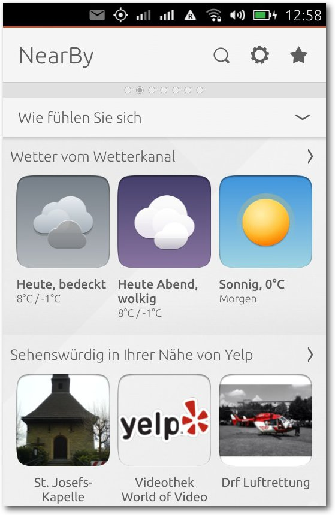

freiesMagazin April 2015
(ISSN 1867-7991)
Themen dieser Ausgabe
Octave – Teil 3: Numerische Integration und MatrizenNachdem im zweiten Teil der Octave-Reihe Funktionen und das Plotten von Graphen behandelt wurden, geht es im dritten Teil an eher komplexe Themen wie die Programmierung und das Entwerfen von eigenen Funktionen. Auch werden Vektoren und Matrizen ausführlich behandelt. (weiterlesen)
Android Google-frei konfigurieren und Alternativen einrichten
Android ist das populärste und am weitesten verbreitete Smartphone-Betriebssystem. Obwohl es auf freier Software basiert, ist in der Standardversion eine enge Verzahnung zu Google und seinen Diensten gegeben. Dieser Artikel richtet sich an alle Anwender mit Grundkenntnissen in Linux und fortgeschrittenen Kenntnissen in Android, die die Kontrolle über ihr Gerät zurückerobern wollen und durch ein Google-freies Android den Datenverkehr zum Google-Server und Telefonressourcen einsparen wollen. (weiterlesen)
Ubuntu Phone: Das bq Aquaris E4.5 näher angeschaut
Vor zwei Jahren wurde das Projekt „Ubuntu Touch“ bei Canonical aus der Taufe gehoben. Jetzt läuft der Verkauf des ersten Ubuntu-Smartphones des spanischen Herstellers bq an. Weitere Geräte von Meizu folgen im Laufe des Jahres. In diesem Artikel werden sowohl das Betriebssystem als auch das Smartphone von bq genauer unter die Lupe genommen. (weiterlesen)
Zum Inhaltsverzeichnis
Inhalt
Linux allgemein
Der März im Kernelrückblick
Anleitungen
Octave – Teil 3: Numerische Integration und Matrizen
Android Google-frei konfigurieren und Alternativen einrichten
Hardware
Ubuntu Phone: Das bq Aquaris E4.5 näher angeschaut
Community
Rezension: Network Hacking
Rezension: Raspberry Pi Kochbuch
Rezension: Hello World! Programmieren für Kids und andere Anfänger
Magazin
Editorial
Leserbriefe
Veranstaltungen
Vorschau
Konventionen
Zum Inhaltsverzeichnis
Editorial
Autoren gesucht
Aufmerksame Leser haben mit Sicherheit bemerkt, dass sich in der aktuellen Ausgabe weniger Artikel als üblich finden. Die drei „Topthemen“, die normalerweise auf der Titelseite angekündigt werden und eine Auswahl der besten Artikel der Ausgabe darstellen mussten in ein normales „Themen“ umbenannt werden, weil die Ausgabe überhaupt nur drei größere Artikel bereit hält. Ansonsten gibt es nur noch die Rezensionen und den Kernelrückblick. Wir sind also auch auf der Suche nach neuen Autoren, die ihre Artikel rund um die Themen Open Source, Linux und Freie Software gerne bei freiesMagazin veröffentlichen möchten, denn ohne diese Autoren wären die Layouter und Korrektoren arbeitslos. Da freiesMagazin keine feste Autorenmannschaft hat, sind wir auf Zusendungen aus der Community angewiesen. Dabei gilt: (Fast) jeder kann einen Artikel über das schreiben, was ihn interessiert. Eigentlich müssen Sie dafür nur Spaß am Schreiben haben und sich verständlich ausdrücken können, sodass jeder Leser Ihren Artikel oder Ihre Anleitungen nachvollziehen kann. Gerne gesehen sind vor allem Softwarevorstellungen und Spiele, aber auch HowTos oder Tutorials wünschen sich unsere Leser sehr. Ideen für Artikel finden sich zum Beispiel auf unserer Artikelwunschliste [1]. Wir sind allerdings immer offen für ganz neue Vorschläge aus den Bereichen Linux, Freie Software und Open Source. Auch ein Blick in die Autorenrichtlinien [2] lohnt sich, denn dort steht viel Wissenswertes über das Verfassen von Artikeln für freiesMagazin, das uns die Arbeit in der Redaktion erleichtert und eine gleichbleibende Qualität von freiesMagazin sicherstellt. Wenn Sie also Interesse haben, etwas für freiesMagazin zu schreiben, schicken Sie und eine E-Mail anWechsel im Team
In der aktuellen Ausgabe haben Jonas Dabelow und Christoph Lehmann zum letzten Mal Artikel für freiesMagazin gesetzt und verlassen leider aus Zeitgründen das Team. Wir möchten uns bei beiden herzlich für die gute Zusammenarbeit bedanken. Da wir damit zur Zeit nur noch zwei Layouter im Team haben, möchten wir an dieser Stelle nach neuen Helfern suchen, die freiesMagazin mitgestalten wollen. Für den Satz und das Layout kommt das Textsatzsystem LaTeX [3] zum Einsatz, sodass etwas Wissen auf diesem Gebiet nicht schaden kann. Das Magazin ist aber so gehalten, dass sehr viel mit Makros gearbeitet wird und nicht zwingend LaTeX-Profis gefordert sind, um das Magazin zu setzen. Zusätzlich wird das Grundgerüst eines Artikels automatisiert von einem Skript erledigt, sodass es hauptsächlich um die „Feinarbeit“ des Artikels geht. Als Layouter muss man die Bilder an die richtige Stelle im Text setzen und, um schöne Umbrüche oder Textverteilung zu erreichen, auch mitunter selbst einmal etwas am Text ändern. Diese Eigenschaft und ein Auge für gutes Layout sind wichtiger als alle LaTeX-Kenntnisse. Daneben wäre Wissen im Umgang mit dem Versionskontrollsystem Subversion (SVN [4]) gut, ist aber nicht zwingend erforderlich. Die wenigen SVN-Befehle, die dazu benötigt werden, sind schnell erlernt – auch Dank einer hervorragenden Dokumentation. Zusätzlich stehen in den meisten Linux-Distributionen und Desktopumgebungen auch grafische Oberflächen für die Verwaltung in einem SVN-Repository bereit, sodass man nicht zwingend die Konsole bedienen muss – auch wenn es darüber manchmal schneller geht. Zwei Dinge sind uns bei einer Mitarbeit wichtig: Lernbereitschaft und langzeitiges Engagement. Vor allem der zweite Punkt ist wichtig, da die Einarbeitung in das Magazin etwas Zeit kostet und sich nur lohnt, wenn der- oder diejenige länger dabei sein kann. So können wir besser planen und Aufgaben besser verteilen. Als Gegenleistung für die ehrenamtliche Tätigkeit winkt aber kein Geld, sondern „nur“ die eigene Freude daran, an einem Community-Projekt mitzuwirken und der Gemeinschaft etwas zurückgeben zu können. Wenn wir nun Ihr Interesse geweckt haben, sind Sie herzlich eingeladen, sich bis zum Erscheinen der nächsten Ausgabe am 3. Mai 2015 unterfreiesMagazin am Kiosk – leider doch nicht!
Unser Aprilscherz dieses Jahr versprach eine Druckversion von freiesMagazin an den Kiosken deutschlandweit [5] . Leider handelte es sich dabei wie gesagt nur um einen Scherz und freiesMagazin wird vorerst nicht am Kiosk erscheinen [6]. Der organisatorische Aufwand, aber vor allem auch die Kosten für eine Druckausgabe liegen viel zu hoch. Zusätzlich wird Druckmarkt wird immer schwächer, es wäre daher unsinnig, dorthin zu expandieren. Linux-Magazine gibt es am Kiosk auch schon genug, daher wird freiesMagazin da nicht mitmischen wollen. Wir freuen uns aber sehr über die vielen Kommentare, die zeigen, dass der Scherz gut angekommen ist. So fragte jemand, wie denn die Autorenvergütung aussehe, ob man pro Seite, Wort oder Artikel bezahlt wird. Und auch nach einem Abonnement und einer Freundschaftswerbung wurde gefragt. Wir haben in dem Zuge im Übrigen nicht die Grafikdesigner des Heise Verlags abgeworben. ;) Wir möchten uns an dieser Stelle auch sehr herzlich bei Maren Hachmann für die Gestaltung des Covers der „Erstausgabe“ bedanken! Das Layout des Mozilla-Artikels wurde aber tatsächlich mit LaTeX erstellt, welches auf einer Vorlage eines Vortrags von 2009 basiert [7]. Das kleine Beispiel zeigt dann mitunter auch die Fähigkeiten von LaTeX, auch wenn diese Nutzungsart sicherlich nicht zu den Standardanwendungsfällen des Textsatzsystems gehört. Wir hoffen jedenfalls, dass jeder mit dem Aprilscherz seine Freude hatte und niemand zu traurig ist, dass es doch keine Druckversion von freiesMagazin geben wird. Und damit wünschen wir allen Lesern viel Spaß mit der neuen Ausgabe! Ihre freiesMagazin-Redaktion Links[1] http://www.freiesmagazin.de/artikelwuensche
[2] http://www.freiesmagazin.de/system/files/autorenrichtlinien-20140501.pdf
[3] https://de.wikipedia.org/wiki/LaTeX
[4] http://subversion.apache.org/
[5] http://www.freiesmagazin.de/20150401-freiesmagazin-als-druckausgabe-am-kiosk
[6] http://www.freiesmagazin.de/20150402-korrektur-freiesmagazin-doch-nicht-als-druckausgabe-am-kiosk
[7] http://www.deesaster.org/latex-magazinerstellung.php
Beitrag teilen Beitrag kommentieren
Zum Inhaltsverzeichnis
Der März im Kernelrückblick
von Mathias Menzer Basis aller Distributionen ist der Linux-Kernel, der fortwährend weiterentwickelt wird. Welche Geräte in einem halben Jahr unterstützt werden und welche Funktionen neu hinzukommen, erfährt man, wenn man den aktuellen Entwickler-Kernel im Auge behält.Linux 4.0 noch nicht ganz fertig
Ein wenig verspätet wurde Linux 4.0-rc2 [1] freigegeben, was einem Fehler auf Torvalds Mac Mini geschuldet war. Dieser wurde durch älteren Code hervorgerufen, der auf neu eingeführte Methoden zur Behandlung von Quellen für die Generierung der Grafikausgabe gestoßen war. Der Fehler wurde mit einem Patch von Daniel Vetter behoben, woraufhin Torvalds den -rc2 inklusive des Patches veröffentlichte. In Vergleich zum Vorgänger fiel die dritte Entwicklerversion [2] zwar recht groß aus, allerdings lag 4.0-rc2 eher unter dem Durchschnitt der letzten Versionen. Der Umfang kam in erster Linie durch Merges einiger Patch-Sammlungen aus David Millers Netzwerk-Zweig und Dave Arlies DRM-Zweig sowie zweier Sammlungen von Korrekturen für ASoC (ALSA System on Chip) und Samsungs Exynos-Architektur [3] zustande. Doch selbst diese Erweiterungen und Korrekturen stufte Torvalds zu diesem Zeitpunkt als unkritisch ein. Weiterhin wurde der „Code of Conflict“ aufgenommen (siehe unten). Eine größere Sammlung an Patches mit Fehlerkorrekturen für ARM-SoC (System-on-Chip auf Basis der ARM-Architektur) machte dann einen guten Teil der Änderungen am -rc4 [4] aus. Den zweitgrößten Einschlag erzeugte das Verschieben eines größeren Codeschnipsels in einen anderen Bereich, was von Umbauarbeiten am Gadget-Framework herrührte. Gadget ermöglicht es, Linux auch als USB-Gerät (Device) zu nutzen. Dem gegenüber steht die Verwendung als USB-Host (Controller), als des steuernden Teils im USB-Verbund, was den meisten Anwendern geläufiger sein dürfte. Linux 4.0-rc5 [5] wies die gleiche Zahl an Commits auf wie sein Vorgänger. Ein großer Teil der Änderungen kam wieder aus David Millers Netzwerk-Zweig, der dort eine ganze Reihe an Fehlerkorrekturen gesammelt hatte. Ein weiterer Merge betraf das Dateisystem btrfs und lieferte hierfür eine Zahl an Korrekturen. Den Rest machten hauptsächlich kleinere Änderungen aus, die sich überwiegend auf die Grafik- und Netzwerktreiber verteilten sowie auf Korrekturen des Gadget-Frameworks. Jüngster Spross der Entwickler-Linie ist Linux 4.0-rc6 [6], der erstmals den Eindruck erweckt, dass das Ende des Entwicklungszyklus naht. Dennoch kann -rc6 die schon länger erwartete Korrektur von Performance-Problemen der NUMA-Speicherarchitektur [7] aufweisen. NUMA ermöglicht es auf Mehrprozessor-Systemen, dass alle CPUs auf die Speicherbereiche der anderen Prozessoren zugreifen können und vermeidet damit unnötige Kopier- und Verschiebe-Aktionen der Daten in einen gemeinsamen Speicherbereich, wenn diese anderen Prozessoren zur Verfügung stehen müssen. Allerdings fielen diese Korrekturen vergleichsweise kompakt aus, an der Zahl der geänderten Quelltextzeilen gemessen. Deutlich stärker machten sich wieder einmal Korrekturen aus dem Netzwerk- und ARM-Umfeld bemerkbar.Konfliktbehaftet
In den Reihen der Kernel-Entwickler geht es bisweilen rau zu. Manche Diskussion wird mit sehr eindeutigen Worten und Formulierungen gewürzt und auch der Hauptentwickler Linus Torvalds greift gerne im Ton daneben. Eben dieser Umgangston auf den Kernel-Mailing-Listen wurde schon öfter kritisiert. Oftmals führt dies zu Konflikten, die dann mit scharfen Worten geführt werden. Reichen Neulinge oder weniger robuste Gemüter Patches ein und geraten sie dann zwischen die Fronten oder werden gar Ziel solcher Kritik, ist es verständlich, wenn ihnen die Lust vergeht. Greg Kroah-Hartmann legte nun einen Patch vor, um den Linux-Kernel mit einem „Code of Conflict“ zu versehen [8]. Dieser recht kurze Text stellt klar, dass persönliche Angriffe nicht akzeptabel sind. Fühlt sich jemand angegriffen, so wird auf das Technical Advisory Board [9] verwiesen, dessen Mitglieder dann vermitteln sollen. Diesem Gremium gehören neben Greg Kroah-Hartmann unter anderem auch der Maintainer des Echtzeit-Linux-Zweiges Thomas Gleixner oder die mit der Pflege der USB-Treiber betraute Sarah Sharp an. Auch den wohl wichtigsten Punkt liefert der neue Code of Conflict mit: „Seid großartig zueinander!“kdbus im Kernel
Wurde in Linux 3.19 gerade erst mit Binder ein System zur Interprozesskommunikation (IPC) aufgenommen (siehe „Der Februar im Kernelrückblick“, freiesMagazin 03/2015 [10]), ist auch schon wieder kdbus im Gespräch. Nach etwas über einem Jahr Entwicklungszeit scheinen am aktuellen Satz an Patches keine größeren Beanstandungen mehr zu bestehen, weshalb diese nun in den linux-next-Zweig aufgenommen wurden [11]. Damit steht kdbus nun direkt vor der Aufnahme in die kommende Entwicklerversion des Linux-Kernels und dürfte damit ab Linux 4.1 mit an Bord sein, sofern keine unerwarteten Fehler mehr auftreten.Pflaster gegen Hammer
Seit März macht eine als „Rowhammer“ [12] bekannte Methode zur Speichermanipulation die Runde. Diese erlaubt es, sich höhere Rechte auf einem Linux-System zu verschaffen, nur indem bestimmte Speicherstellen gelesen werden. Die Ursache liegt allerdings in der Hardware, konkret in DRAM-Speicherchips [13], wo der Zugriff auf bestimmte Speicherstellen die Bits benachbarter Speicherstellen kippen kann. Schafft ein Angreifer es, dieses Verhalten gezielt einzusetzen, so sind neben Abstürzen des Systems auch die Manipulation von Daten im Arbeitsspeicher möglich. Letzteres kann auch dazu genutzt werden, gezielt die Rechte eigener Prozesse auszuweiten. Allerdings sind die Hürden hierfür sehr hoch, da genaue Kenntnisse über den Aufbau der im Zielsystem eingesetzten Hardware erforderlich sind. Obwohl dadurch breit gestreute Angriffe sehr unwahrscheinlich sind, ist diese Schwachstelle äußerst beunruhigend, da ihre Beseitigung grundsätzlich den Austausch von Hardware erforderlich macht. Auch wenn sich das Problem nicht auf der Betriebssystemseite lösen lässt, so kann es dennoch umgangen oder erschwert werden. Ein Patch soll künftig Auskunft über die physischen Speicheradressen eines Prozesses nur noch für Benutzer mit Superuser-Rechten erlauben [14]. Der eigentliche Angriff ist zwar immer noch machbar, aber der Angreifer kann nicht einfach auslesen, welche Adressen für ihn von Interesse sind. Dieses kleine, gerade einmal drei Codezeilen messende Pflästerchen wurde bereits in -rc5 aufgenommen und ist damit im kommenden Linux-Kernel enthalten. Links[1] https://lkml.org/lkml/2015/3/3/572
[2] https://lkml.org/lkml/2015/3/8/216
[3] https://de.wikipedia.org/wiki/Samsung_Exynos
[4] https://lkml.org/lkml/2015/3/15/180
[5] https://lkml.org/lkml/2015/3/23/1
[6] https://lkml.org/lkml/2015/3/29/248
[7] https://de.wikipedia.org/wiki/Non-Uniform_Memory_Access
[8] https://git.kernel.org/cgit/linux/kernel/git/torvalds/linux.git/commit/?id=b0bc65729070b9cbdbb53ff042984a3c545a0e34
[9] http://www.linuxfoundation.org/programs/advisory-councils/tab
[10] http://www.freiesmagazin.de/freiesMagazin-2015-03
[11] http://www.pro-linux.de/-0h21566d
[12] https://de.wikipedia.org/wiki/Rowhammer
[13] https://de.wikipedia.org/wiki/Dynamic_Random_Access_Memory
[14] http://www.pro-linux.de/-0h21567e
| Autoreninformation |
| Mathias Menzer (Webseite) behält die Entwicklung des Linux-Kernels im Blick, um über kommende Funktionen von Linux auf dem Laufenden zu bleiben und immer mit interessanten Abkürzungen und komplizierten Begriffen dienen zu können. |
Beitrag teilen Beitrag kommentieren
Zum Inhaltsverzeichnis
Octave – Teil 3: Numerische Integration und Matrizen
von Jens Dörpinghaus Nachdem im zweiten Teil Funktionen und das Plotten von Graphen behandelt wurden, geht es nun an eher komplexe Themen wie die Programmierung und das Entwerfen von eigenen Funktionen. Auch werden Vektoren und Matrizen behandelt. Im vorherigen Abschnitt des letzten Artikels aus der Octave-Reihe (siehe Ausgabe 02/2015 von freiesMagazin [1]) wurde bereits eine Funktion f definiert. Aus der Schule kennt man die Integration, die man dort im Allgemeinen durch das Berechnen einer Stammfunktion löst. Anschaulich geht es um die Berechnung des Flächeninhaltes zwischen dem Graphen der Funktion f und der x-Achse. Es ist aber zum einen nicht immer möglich, eine Stammfunktion anzugeben und oft ist es einfach zweckmäßig eine numerische Näherung dieses Wertes zu bestimmen. Das soll an dieser Stelle die Motivation sein, ein erstes numerisches Problem zu lösen und Schleifen zu benutzen.Numerische Integration mit der Trapezformel, for-Schleifen
Als Näherungsformel soll die Trapezformel angewandt werden.Skizze zur Trapezformel.
Dazu wählt man zwei x-Werte a und b, zwischen denen man den Flächeninhalt wie folgt annähert:
|
>> a=2;
>> b=4;
>> 1/2* ( f(a) + f(b)) * (b-a)
ans = 20
Anschaulich kann man eine Grafik erstellen mit
>> b=4;
>> 1/2* ( f(a) + f(b)) * (b-a)
ans = 20
>> x=a:0.1:b;
>> plot (x,f(x),'-',[a,b],[f(a),f(b)],'-r');
>> plot (x,f(x),'-',[a,b],[f(a),f(b)],'-r');
Die Funktion f und die Näherungsfunktion durch die Trapezformel (rot).
Zunächst wird also die Funktion f geplottet und dann die Näherungsfunktion in rot dargestellt. Es ist sinnvoll, die Trapezformel in eine separate Funktion auszugliedern:
function I = trapez(a,b,fa,fb)
I = (1/2)* ( fa + fb) * (b-a);
end
Listing: trapez.m
Diese wird wieder unter einem Dateinamen, der dem Funktionsnamen entspricht,
gespeichert. Ein kurzer Test mit
I = (1/2)* ( fa + fb) * (b-a);
end
>> trapez(a,b,f(a),f(b))
ans = 20
liefert dasselbe Ergebnis. Man kann nun auf einem bestimmtes Intervall
mit einer bestimmten Schrittweite die Ergebnisse der Trapezformel auf
Teilintervallen zusammensetzen, um so ein genaueres Ergebnis zu
erhalten. Die Idee ist, das Intervall [a,b] auf der
x-Achse in gleiche Abstände s einzuteilen. Dann
bekommt man Intervalle [a,a+s], [a+s, a+2s], ...,
[b−s,b] auf die wieder die Trapezformel angewandt werden
kann. Den Abstand s nennt man Schrittweite. Eine Funktion mit
kleinerer Schrittweite kann „genauer“ approximiert werden kann. Dazu
nutzt man folgende Funktion:
ans = 20
function I = zusammengesetztTrapez(a,b,schrittweite)
% Liste von Stuetzpunkten
x = a:schrittweite:(b-schrittweite);
integral = 0;
% Trapezformel anwenden
for stuetzpunkt = x,
stuetzpunkt2 = stuetzpunkt + schrittweite;
integral = integral + trapez(stuetzpunkt, stuetzpunkt2, f(stuetzpunkt), f(stuetzpunkt2));
end;
I = integral;
end
Listing: zusammengesetztTrapez.m
% Liste von Stuetzpunkten
x = a:schrittweite:(b-schrittweite);
integral = 0;
% Trapezformel anwenden
for stuetzpunkt = x,
stuetzpunkt2 = stuetzpunkt + schrittweite;
integral = integral + trapez(stuetzpunkt, stuetzpunkt2, f(stuetzpunkt), f(stuetzpunkt2));
end;
I = integral;
end
Skizze zur zusammengesetzten Trapezformel.
Die Funktion liefert eine Näherung I des Integrals zurück. Das Integral wird von a bis b mit fester Schrittweite berechnet. Die erste Zeile ist ein sogenannte Kommentar. Kommentare fangen mit einem Prozentzeichen an und werden von Octave ignoriert, d. h. man kann sie nutzen, um dort Zusatzinformationen zum Verstehen des Quellcodes zu hinterlegen. In x wird also die Liste von Stützpunkten gespeichert; diese Schreibweise wurde schon oben eingeführt. Da man im Folgenden die Trapezformel immer für das Intervall [stuetzpunkt, stuetzpunkt+schrittweite] anwendet, kann in dieser Liste der rechte Rand des Intervalls [a,b] entfallen. Zunächst ist die Summe der Formeln 0. Nun kommt noch eine Neuerung hinzu, die sogenannte for-Schleife. Dieser kann eine Menge von Werten übergeben werden und für jeden dieser Werte wird dann der Codeblock der Schleife ausgeführt. Die for-Schleife wird mit end abgeschlossen. In diesem konkreten Fall nimmt sie jeden Wert aus x und bezeichnet ihn mit stuetzpunkt. Der rechte Stützpunkt ist jeweils stuetzpunkt + schrittweite, sodass man dem Wert des Integrals nun den Wert der Trapezformel dieses Teilintervals hinzufügt. Zum Schluss gibt die Funktion die gebildete Summe als I zurück. Das kann man sofort testen:
>> zusammengesetztTrapez(0,12,4)
ans = 608
Dies berechnet also das Integral der Funktion f (zur Erinnerung, es ist
f(x)=x2 gesetzt, dies kann aber beliebig geändert werden) zwischen 0 und
12 mit der Schrittweite 4. Wenn man man sukzessive kleinere Schrittweiten wählt,
sieht man, dass sich die Näherungsformel der eigentlichen Lösung 576 annähert:
ans = 608
>> zusammengesetztTrapez(0,12,2)
ans = 584
>> zusammengesetztTrapez(0,12,0.5)
ans = 576.50
Das soll im folgenden Abschnitt etwas systematischer untersucht werden.
ans = 584
>> zusammengesetztTrapez(0,12,0.5)
ans = 576.50
Analyse der zusammengesetzten Trapezformel, Vektoren
Der Wert von x im vorherigen Abschnitt wurde bisher als „Liste“ bezeichnet. Das ist anschaulich richtig; genau genommen handelt es sich aber um einen Vektor. Vektoren können praktisch aus beliebig vielen Einträgen bestehen:>> x=[1,2,3,4]
x =
1 2 3 4
>> x=[1,2]
x =
1 2
>> x=1:1:4
x =
1 2 3 4
Man kann Vektoren also nicht nur direkt eingeben, sondern auch in der
Von-Schrittweite-Bis-Schreibweise.
Auf bestimmte Elemente eines Vektors kann natürlich auch direkt
zugegriffen werden, wie man das etwa von Arrays oder Listen aus
anderen Programmiersprachen schon kennt. Dazu kann man einzelne Elemente in
normale Klammern setzen oder aber auch ganze Bereiche eines Vektors
angeben:
x =
1 2 3 4
>> x=[1,2]
x =
1 2
>> x=1:1:4
x =
1 2 3 4
>> x(2)
ans = 2
>> x(4)
ans = 4
>> x(1:2)
ans =
1 2
Weiter gibt es das Schlüsselwort end, mit dem die Länge des Vektors
angegeben wird. So können Elemente eines Vektors entfernt oder auch neue hinzugefügt werden.
ans = 2
>> x(4)
ans = 4
>> x(1:2)
ans =
1 2
>> x(end + 1) = 6
x =
1 2 3 4 6
>> x = x(1:end -1)
x =
1 2 3 4
Es gibt zwei Aspekte, die anhand des Beispiel aus dem vorherigen
Abschnitt ergänzt werden können. Zum einen kann die zuvor definierte Funktion der
zusammengesetzten Trapezformel nun auch um einen Plot ergänzt werden –
man möchte schließlich auch sehen, was man berechnet hat.
Das entsprechende Intervall [a,b] mit der Schrittweite war schon in x
gespeichert, allerdings fehlt noch der rechte Rand b. Weiter soll mit xg
noch eine für einen Plot geeignete Darstellung des Intervalls gegeben werden.
Damit kann die Funktion geplottet werden.
x =
1 2 3 4 6
>> x = x(1:end -1)
x =
1 2 3 4
xg = a:0.1:b;
x(end + 1)=b;
plot (x,f(x),'-',xg,f(xg),'-');
Listing: plotFunction.m
Führt man nun die Funktion mit denselben drei Schrittweiten wie im vorherigen
Abschnitt aus, sieht man anschaulich, wie sich die Näherungsfunktion der
eigentlichen Funktion annähert. Das kann nun aber auch systematisch untersucht
werden.
Hierfür kann man eine Funktion definieren, die eine ganze Testreihe ausführt. Dazu
benötigt sie eine Liste von Schrittweiten sowie den Anfang a und das Ende b
des Intervalls.
x(end + 1)=b;
plot (x,f(x),'-',xg,f(xg),'-');
function liste = testreihe(a,b,listeschrittweiten)
for schrittweite = listeschrittweiten,
liste(end +1) = zusammengesetztTrapez(a,b,schrittweite);
end;
end
Listing: testreihe.m
Diese Funktion muss nun wieder in einer Datei mit einem Dateinamen,
der mit dem Funktionsnamen übereinstimmt, gespeichert werden. Allgemein muss
in Octave der Dateiname nicht mit dem Funktionsnamen übereinstimmen
und es können theoretisch beliebig viele Funktionen in einer Datei
gespeichert werden. Zum einen aus Gründen der Übersichtlichkeit, zum
anderen auch aus Kompatibilitätsgründen hat sich aber das Verfahren
eingebürgert, nur eine Funktion pro Datei zu verwenden und den Namen
entsprechend zu wählen.
Die Funktion testreihe berechnet also mit der Liste von Schrittweiten
verschiedene Näherungen, indem sie für jedes Element in der Liste die Funktion
zusammengesetztTrapez aufruft.
Ein erster Test liefert nun eine schöne Übersicht, wie sich bei kleineren
Schrittweiten die zusammengesetzte Trapezformel der Lösung annähert.
for schrittweite = listeschrittweiten,
liste(end +1) = zusammengesetztTrapez(a,b,schrittweite);
end;
end
>> x=[4,2,1,0.5,0.1,0.01]
x =
4.000000 2.000000 1.000000 0.500000 0.100000 0.010000
>> testreihe(a,b,x)
ans =
608.00 584.00 578.00 576.50 576.02 576.00
Dies kann man auch plotten. Dazu wird diese Liste in der Variable l gespeichert.
x =
4.000000 2.000000 1.000000 0.500000 0.100000 0.010000
>> testreihe(a,b,x)
ans =
608.00 584.00 578.00 576.50 576.02 576.00
>> l = testreihe(a,b,x);
Den absoluten Fehler kann man errechnen, indem man den Betrag von der Differenz
der Optimallösung und der Näherungslösung bestimmt:
|
>> plot (1:6, abs( 576 -l))
>> xlabel ('Rechnung');
>> ylabel ('Absoluter Fehler');
>> xlabel ('Rechnung');
>> ylabel ('Absoluter Fehler');
Der Plot des absoluten Fehlers.
Rechnen mit Matrizen und Vektoren
Erste Rechnungen mit Matrizen und Vektoren wurden im vorherigen Abschnitt schon ausgeführt. Bevor man weitergeht, ist es an dieser Stelle wichtig, die Unterscheidung zwischen elementweisen und normalen Verknüpfungen zu betrachten. Diese unterscheiden sich wie folgt:- Die normalen Verknüpfungen +,-,*,/,^ stellen die normale Matrixaddition, -multiplikation etc. dar.
- Die elementweisen Verknüpfungen .+,.-,.*,./,.^ verknüpfen den zweiten Operator mit jedem Element des ersten Operators.
>> A = [1,2;3,4];
>> A.*2
ans =
2 4
6 8
>> A*2
ans =
2 4
6 8
Hier fällt auf, dass Octave selbstständig die Multiplikation mit einem
Skalar ausführt, unabhängig davon ob man die richtige Verknüpfung
auswählt. Anders sieht es jedoch bei der Multiplikation der Matrix A
mit einem Vektor aus. Beim komponentenweisen Multiplizieren sucht
Octave automatisch nach den passenden Elementen. Beim normalen
Multiplizieren ist das Ergebnis ein Vektor.
>> A.*2
ans =
2 4
6 8
>> A*2
ans =
2 4
6 8
>> A.*[2;3]
warning: product: automatic broadcasting operation applied
ans =
2 4
9 12
>> A*[2;3]
ans =
8
18
Direkt ersichtlich ist auch der Unterschied zwischen dem elementweisen
Potenzieren einer Matrix und der Matrixpotenzierung:
warning: product: automatic broadcasting operation applied
ans =
2 4
9 12
>> A*[2;3]
ans =
8
18
>> A.^2
ans =
1 4
9 16
>> A^2
ans =
7 10
15 22
>> A*A
ans =
7 10
15 22
An dieser Stelle sei auch die Berechnung der Determinante, det(A), angesprochen.
ans =
1 4
9 16
>> A^2
ans =
7 10
15 22
>> A*A
ans =
7 10
15 22
>> det(A)
ans = -2
Die Determinante gibt z. B. Aufschluss darüber, ob eine quadratische Matrix A
invertierbar ist. Sie kann auch angewendet werden, um die Frage zu klären, ob ein
lineares Gleichungssystem Ax=b lösbar ist. Mehr Informationen gibt es in der Wikipedia [2].
ans = -2
Links- und Rechtsdivision, Lösen von linearen Gleichungssystemen
Weitere Fallstricke bei den elementaren Operatoren gibt es auch bei der Division. Das Dividieren von Matrizen ist ein komplexes Thema und mathematisch so nicht ganz exakt, da eine Matrixdivision nicht definiert ist. In Octave ist eine Umkehrung der Matrixmultiplikation allerdings definiert, und zwar als Links- und Rechtsdivision x\y und x/y:>> A = [1,2;3,4];
>> B=[3,4;5,6];
>> C=A*B
C =
13 16
29 36
>> C/B
ans =
1 2
3 4
>> A\C
ans =
3.0000 4.0000
5.0000 6.0000
Laut Dokumentation ist die Rechtsdivision x/y definiert als
x/y=(inverse (y′) * x′)′
und die Linksdivision x\y definiert als
x\y=inverse (x) * y
Das sollte man stets im Hinterkopf behalten und diese Funktionen nicht
leichtfertig anwenden.
A\b hat weiter die Funktion, das lineare Gleichungssystem Ax=b zu lösen.
>> B=[3,4;5,6];
>> C=A*B
C =
13 16
29 36
>> C/B
ans =
1 2
3 4
>> A\C
ans =
3.0000 4.0000
5.0000 6.0000
>> b=[1;2];
>> A\b
ans =
0.00000
0.50000
Hierbei benutzt Octave die Gauß-Elimination oder die QR-Zerlegung. Bei
singulären oder schlecht konditionierten Matrizen wird eine Warnmeldung
angezeigt, trotzdem sollte die Funktion ebenfalls nicht ohne weitere Prüfung
angewendet werden.
Zur Erinnerung: Ein lineares Gleichungssystem hat entweder keine, eine oder
unendlich viele Lösungen. Die von Octave berechnete Lösung ist also entweder die
eine Lösung, eine beliebige von unendlich vielen oder keine Lösung, da Octave
nur eine Näherungslösung anzeigt.
>> A\b
ans =
0.00000
0.50000
Ausblick
Natürlich ist diese kleine Artikelreihe nur eine sehr kurze Einführung gewesen. Trotzdem wurden die wesentlichen Handwerkszeuge behandelt. Mit Octave kann man noch viel mehr machen, etwa symbolisches Rechnen mit dem symbolic-Package, Statistik, usw. Es lohnt sich, einfach die Augen offen zu halten. Wer sich noch ausgiebiger mit Octave beschäftigen möchte, kann sich in die Octave-Dokumentation einlesen [3]. Im Octave-Wiki [4] gibt es noch weitere Beispiele und Anleitungen. Da Octave weitestgehend kompatibel zu Matlab ist, sind auch Dokumentationen und Anleitungen für dieses kommerzielle Programm oftmals hilfreich. Links[1] http://www.freiesmagazin.de/freiesMagazin-2015-02
[2] https://de.wikipedia.org/wiki/Determinante_(Mathematik)
[3] https://www.gnu.org/software/octave/doc/interpreter/index.html
[4] http://wiki.octave.org/Main_Page
| Autoreninformation |
| Jens Dörpinghaus arbeitet seit vielen Jahren mit Matlab und Octave. Da er privat ausschließlich freie Software einsetzt, verfolgt er die Entwicklung von Octave gespannt. |
Beitrag teilen Beitrag kommentieren
Zum Inhaltsverzeichnis
Android Google-frei konfigurieren und Alternativen einrichten
von Roman Buchheit Android ist das populärste und am weitesten verbreitete Smartphone-Betriebssystem. Obwohl es auf freier Software basiert, ist in der Standardversion eine enge Verzahnung zu Google und seinen Diensten gegeben. Dieser Artikel richtet sich an alle Anwender mit Grundkenntnissen in Linux und fortgeschrittenen Kenntnissen in Android, die die Kontrolle über ihr Gerät zurückerobern wollen und durch ein Google-freies Android den Datenverkehr zum Google-Server und Telefonressourcen einsparen wollen. Der Artikel stellt eine Anleitung zum Entfernen der Google-Dienste und zum Ersetzen derselbigen durch unabhängige, alternative Dienste vor. Somit ist der zweite Abschnitt des Artikels auch für Leser nützlich, die sich für eine Google-freie Custom ROM (z. B. Cyanogenmod [1]) entschieden haben und gerne einen Teil des durch die Google-Dienste bekannten Komforts aus offenen Alternativen einrichten wollen. Dazu gehört ein Ersatz der App-Quelle (Google Play Store), alternative Dienste zur automatischen Kalender- und Kontaktsynchronisierung (Google Contacts und Google Calender), eine Alternative zur offiziellen YouTube-App und eine provisorische Lösung zum Installieren und Aktualisieren von unverzichtbaren Google Play Store Apps über einen Desktop-Computer. Der Artikel zeigt die Einrichtung eines Google-freien Android, ohne dass man als Nutzer Einschränkungen oder Komfortverlust in Kauf nehmen muss.Vorbereitungen
Beim Befolgen dieses Artikels ist es nicht notwendig, eine neue ROM (Firmware) auf sein Smartphone aufzuspielen. Jedoch wird ein Smartphone mit Root-Rechten benötigt.Rooten des Android-Systems
Wie das bei verschiedenen Modellen funktioniert, kann zum Beispiel auf Androidpit [2] oder bei xda-developers [3] nachgelesen werden. Weitere Informationen zum Rooten von Android-Telefonen finden sich auch im Droidwiki [4]. Es ist zu beachten, dass bei falschem Vorgehen das Telefon zerstört werden kann und im Normalfall durch die Änderung der Software die Garantie des Herstellers verloren geht. Man sollte daher genau aufpassen, dass man die passende Anleitung zu seinem Modell heraussucht. Außerdem ist es zu empfehlen, vor der Umsetzung dieses Artikels alle wichtigen Daten des Handys zu sichern. Falls es zu Problemen kommt, kann im Notfall immer der Werkszustand wiederhergestellt werden bzw. eine Sicherungskopie zurückgespielt werden.Vorbereitungen der Android"=Systemeinstellungen
Als erstes muss in den Einstellungen die Erlaubnis erteilt werden, Nicht-Market Anwendungen zu installieren. Bei Android 2.3 findet sich diese Option unter „Einstellungen -> Anwendungen -> Unbekannte Herkunft“. Bei den neueren Android-Versionen sollte es ähnlich zu finden sein. Diese Option erlaubt, dass nach dem Entfernen des Google Play Store Apps aus alternativen Quellen installiert werden können. Um Apps von einem Linux Computer aus über das Terminal auf dem Telefon zu installieren, muss außerdem der Debug-Modus aktiviert werden. Unter Android 2.3 findet sich diese Option unter „Einstellungen -> Anwendungen -> Entwicklung -> Debug-Modus“.Notwendige Apps aus dem Play Store installieren
Für diese Anleitung wird eine Reihe von Apps benötigt. Am einfachsten ist es, wenn diese vor dem Entfernen der Google Dienste aus dem Play Store installiert werden. Für das Blockieren der Google-Dienste wird die App Chef's App Freezer [5] benötigt. Es ist wichtig zu wissen, dass diese App Root-Rechte benötigt, das heißt das Telefon muss schon erfolgreich gerootet worden sein, bevor die App benutzt werden kann. Für die automatische Synchronisation von Kontakt- und Kalenderdaten mit einem alternativen Cloud-Server kann ich die kostenpflichtigen Apps CardDAV-Sync [6] und CalDav-Sync [7] empfehlen. Als kostenlose Alternativen finden sich jedoch auch die älteren Beta-Versionen CardDAV-Sync free beta für die Konaktsynchronisation und CalDAV Sync Free Beta (ab Android 4.0) für die Kalender-Synchronisation im Google Play Store. Über F-Droid (siehe unten) kann man außerdem auch Open-Source Apps wie DAVdroid (ab Android 4.0) für die Kontakt- und Kalendersynchronisation installieren.Google-Dienste deaktivieren
Zunächst werden die Google Dienste mit Chef's App Freezer blockiert. Bei geöffneter App wird eine Liste aller installierten Apps angezeigt.Die Oberfläche von Chef's App Freezer.
Um eine App einzufrieren, wird sie in der Liste herausgesucht und die Option „Freeze“ gewählt. Unter Android 2.3/Cyanogenmod 7 müssen folgende Apps eingefroren werden, um alle Google-Dienste auf dem Smartphone zu blockieren:
- Google Backup Transport
- Google Kalender synchronisieren
- Google One Time Init
- Google Partner Setup
- Google Play Store
- Google Play Dienste
- Google-Kontakte synchronisieren
- Google-Services-Framework
- Market Feedback Agent
- Market-Apps Installation
- Market-Updater
- Netzwerkstandort
- News & Wetter
Einrichtung von Alternativen
App-Quelle
Als erstes wird die wichtigste App-Quelle abseits von Google Play eingerichtet. Mit dem Browser des Smartphones lädt man die F-Droid-App [8] herunter. Installiert wird sie durch Auswählen der APK-Datei im Dateibrowser des Smartphones.Die Oberfläche von F-Droid.
Mit der F-Droid-App steht unabhängig vom Play Store eine Quelle zum Suchen und Installieren von neuen Apps zur Verfügung. Alle Apps sind Open Source und kostenlos. Die Paketquellen müssen vor dem Suchen nach Updates manuell aktualisiert werden. Das geschieht über die Schaltfläche mit den Pfeilen oben rechts in der Ecke. Im Reiter „Aktualisierungen“ sieht man, wenn eine neue Version von bereits installierten Apps zur Verfügung steht. Aktualisierungen werden durch einzelnes Auswählen in der Liste der Apps installiert.
Automatische Kalender- und Kontaktsynchronisierung
Als nächstes muss eine alternative Cloud abseits von Google für den Kalender und die Kontakte eingerichtet werden. Eine Open-Source Lösung hierfür ist OwnCloud [9]. Anbieter findet man zum Beispiel in einer Liste bei ownCloud [10], wobei auch kostenlose Anbieter mit Serverstandort in Deutschland in der Liste aufgeführt sind. Die Anleitung sollte prinzipiell für alle OwnCloud-Angebote funktionieren. In einem beliebigen Internet-Browser kann man sich seine Google-Kontakte unter „Google Mail -> Meine Kontakte -> Mehr -> Exportieren ...“ in eine vcf-Datei exportieren. Unbedingt sollten hierbei die Optionen „Alle Kontakte“ und „vCard-Format“ aktiviert sein.Die Kontakteinstellungen in der Web-Oberfläche von OwnCloud.
Nach Einrichten des OwnCloud-Kontos kann in der Web-Oberfläche die Kontaktdatei auf den alternativen Server importiert werden. Dafür wählt man „Kontakte -> Einstellungen (Zahnrad-Symbol) -> Importieren“ für die Kontakte aus. Im selben Dialog kann unter dem Weltkugel-Symbol der CardDAV-Link eingesehen werden und sollte notiert werden. Für den Kalender wählt man „Kalender -> Einstellungen (Zahnrad-Symbol)“. Es können der Name, die Zeitzone usw. des Kalenders eingestellt werden. Das Weltkugel-Symbol zeigt auch hier wieder den CalDAV-Link an, der notiert werden sollte. Um vom Smartphone aus auf den Server zuzugreifen, müssen die notierten CardDAV- und CalDAV-Links sowie die Zugangsdaten von OwnCloud in den Apps für die CardDAV- und CalDAV-Synchronisation angegeben werden. Bei den Apps CardDAV-Sync und CalDAV-Sync ist dieser Vorgang selbsterklärend. Die Apps synchronisieren so wie vorher die Google-Dienste Kontakte und Kalenderdaten automatisch zwischen dem Server und dem Smartphone sowie beliebigen weiteren Geräten. Zum Beispiel kann auch problemlos in Thunderbird eine Synchronisation zum OwnCloud-Server eingerichtet werden. Im Internet finden sich Thunderbird"=Erweiterungen für den Zugriff auf CalDAV- und CardDAV-Server.
YouTube Alternative
Die offizielle YouTube-App verweigert ohne eingerichtetes Google-Konto ihren Dienst. Als alternative kann TubeMate [11] benutzt werden. Die App bietet zahlreiche Zusatzfunktionen im Vergleich zur offiziellen App an, so zum Beispiel das Herunterladen von Videos.Unverzichtbare Google-Play-Apps installieren und aktualisieren
Auch mit einem Google-freien Smartphone muss nicht unbedingt auf Apps aus dem Google Play Store verzichtet werden. Hierfür wird die Software Raccoon [12] eingesetzt. Nach dem Herunterladen der jar-Datei öffnet man ein Terminal, wechselt in das Verzeichnis der Datei und startet das Programm mit$ java -jar raccoon-3.3.jar
Das Paket openjdk-7-jre muss hierbei installiert sein.
Die Programmoberfläche von Raccoon.
Unter „Datei -> Neues Archiv“ wird in Raccoon der Google-Account angeben. Das Archiv wird standardmäßig unter ~/Raccoon/archives gespeichert, wo man in Unterordnern auch die APK-Dateien aller heruntergeladenen Apps findet. Über „Suchen“ können sodann alle kostenlosen und bereits mit dem angegebenen Google Account gekauften Apps heruntergeladen werden. Falls man neue Apps kaufen will, kann man dies direkt über den Playstore [13] im Webbrowser machen und die App anschließend mit Raccoon herunterladen. Wählt man bei Raccoon „Datei -> Update“, wird automatisch eine Liste mit Aktualisierungen aller Apps, die bereits mit Raccoon heruntergeladen wurden, angezeigt. Auf diese Weise kann man leicht seine Google-Play-Apps aktuell halten. Mit Raccoon heruntergeladene Apps kann man bequem über Android Device Bridge (ADB) vom Computer aus installieren, wenn das Smartphone über ein USB-Kabel angeschlossen ist. Dazu muss erst das Paket android-tools-adb mit der Paketverwaltung installiert werden. Dann kopiert man über den Dateimanager alle zu installierenden APK-Dateien in einen einzelnen Ordner. Nachdem das Telefon über USB angeschlossen wurde, kann mittels
$ adb devices
geprüft werden, ob es richtig erkannt wird. Dann wechselt man im Terminal zum
Verzeichnis mit den APK-Dateien und führt
$ for file in *.apk; do adb install -r $file; done
aus. Die Option -r steht für „reinstall“, d. h. bereits auf dem Telefon
vorhandene Versionen werden neu installiert, was für Updates notwendig ist.
Generell funktionieren die meisten Apps auch ohne Google-Dienste. Allerdings
kann es vor allem bei Apps, die Google Maps benutzen, zu Fehlermeldungen kommen.
Außerdem ist zu beachten, dass die Positionsfindung per GPS ohne Google-Ortung
wesentlich länger dauert.
Ausgangszustand wiederherstellen
Sollte doch wieder Google auf dem Smartphone benötigt werden, so ist es ausreichend, die blockierten Google-Dienste in Chef's App Freezer wieder aufzutauen. Die eingefrorenen Apps werden in der Liste Frozen angezeigt und per Option „Unfreeze“ wieder aktiviert. Nach einem Neustart sind alle Google-Dienste wieder verfügbar und der Google-Account kann wieder eingerichtet werden. Links[1] http://www.cyanogenmod.org/
[2] http://www.androidpit.de/de/android/wiki/view/Root
[3] http://xda-developers.com/
[4] http://www.droidwiki.de/Root
[5] https://play.google.com/store/apps/details?id=com.chef.freezer
[6] https://play.google.com/store/apps/details?id=org.dmfs.carddav.Sync
[7] https://play.google.com/store/apps/details?id=org.dmfs.caldav.lib
[8] https://f-droid.org/
[9] http://wiki.ubuntuusers.de/ownCloud
[10] https://owncloud.org/providers/
[11] http://tubemate.net/
[12] http://www.onyxbits.de/raccoon
[13] http://play.google.com
| Autoreninformation |
| Roman Buchheit nutzt seit drei Jahren privat hauptsächlich Linux-Systeme. Auf dem Desktop ist er mit Ubuntu unterwegs, in die Android-Welt ist er ebenfalls vor drei Jahren eingestiegen. |
Beitrag teilen Beitrag kommentieren
Zum Inhaltsverzeichnis
Ubuntu Phone: Das bq Aquaris E4.5 näher angeschaut
von Sujeevan Vijayakumaran Vor zwei Jahren wurde das Projekt „Ubuntu Touch“ bei Canonical aus der Taufe gehoben. Jetzt läuft der Verkauf des ersten Ubuntu-Smartphones des spanischen Herstellers bq an. In diesem Artikel werden sowohl das Betriebssystem als auch das Smartphone genauer unter die Lupe genommen. Bereits vor knapp anderthalb Jahren wurde die erste offizielle Version von Ubuntu Phone (damals noch Ubuntu Touch) veröffentlicht. Ein genauer Blick auf die damalige Version findet sich in Ausgabe 11/2013 von freiesMagazin [1]. Seitdem ist viel Zeit vergangen, und auch am System hat sich sehr viel getan, weshalb in diesem Artikel ein kompletter Überblick von Anfang an gegeben wird. Schließlich ist dies die erste Veröffentlichung zu Ubuntu Phone, das es auf einem Smartphone vorinstalliert zu kaufen gibt.Die Software
Die Bedienung von Ubuntu unterscheidet sich grundsätzlich von anderen mobilen Betriebssystemen, wie etwa Android oder iOS. Die größte Besonderheit ist die Gesten-Steuerung, die man von jedem Rand des Bildschirms ausführen kann.Bedienung & Scopes
Beim allerersten Start des Smartphones erscheint zunächst eine Einführung in die Bedienung von Ubuntu Phone, in dem die bereits angesprochene Gesten-Steuerung kurz erläutert wird. Diese Einführung sollte jeder, der noch kein Ubuntu Phone ausprobiert hat, mitmachen, denn sie weist kurz, knapp und völlig ausreichend in die Bedienung ein. Anschließend folgt das mögliche Setzen eines Zugriffsschutzes. Dies kann entweder ein Muster, eine PIN, ein Passwort oder eben kein Zugriffsschutz sein. Beim Betätigen der Power-Taste erscheint zunächst der Welcome-Screen. Dieser zeigt einige Informationen zur Tagesnutzung an. Darunter ist etwa die Anzahl der empfangenen und gesendeten SMS-Nachrichten, erreichte und getätigte Anrufe und die Anzahl der geschossenen Fotos und Videos. Den Welcome-Screen kann man nach links oder rechts zur Seite wischen, wo dann der gesetzte Sperrmechanismus zum Entsperren des Gerätes erscheint.Was sind Scopes?
Nach dem Entsperren landet man auf dem ersten von einigen vorinstallierten Scopes. Scopes ist einer der Ansätze, die Canonical besonders hervorhebt. Bei Scopes handelt es sich um aggregierte Inhalte, die aus verschiedenen Quellen auf den Bildschirm gebracht werden. Es soll damit überflüssig sein, jede App, von der man Informationen haben möchte, einzeln zu öffnen. Stattdessen kann man Scopes eher als Zusammenfassung mehrerer Informationen und Inhalte aus vielen verschiedenen Quellen ansehen. Ubuntu Phone geht damit einen anderen Ansatz als etwa Android, iPhone oder Firefox OS, wo die sogenannten „Home-Screens“ fast nur aus App-Icons und einigen Widgets bestehen, die sich in einem Raster anordnen. Der Vorteil, der sich bei Ubuntu Phone hieraus ergibt, ist, dass man eben nicht viele einzelne Quellen durchgehen muss, sondern diese direkt auf dem Bildschirm präsentiert werden.Die vorinstallierten Scopes
Standardmäßig landet man nach dem Entsperren auf dem Heute-Scope. Dieser zeigt einige Informationen an, die quasi den Tag beschreiben. Darunter fällt natürlich das aktuelle Datum. Es zeigt zudem die Sonnenaufgangs- sowie Sonnenuntergangszeit an. Weiterhin wird das Wetter am Morgen, Mittag und Abend dargestellt – jeweils mit den Temperaturen. Darunter folgen dann noch die heutigen Termine, der nächste Urlaubs- bzw. Feiertag, eine Liste von letzten Anrufen und Mitteilungen sowie Nachrichten von heute und Trends auf Twitter. Mit einem Wisch nach links erreicht man das zweite Scope, in diesem Falle das „NearBy“-Scope. Wie der Name schon aussagt, sammelt dieses Scope Daten aus der näheren Umgebung. Wie auf dem Heute-Scope werden hier die aktuellen Wetter-Daten angezeigt. Über den Dienst yelp werden weiterhin Sehenswürdigkeiten und weitere Dinge in der Nähe angezeigt. Darunter fallen Restaurants, Werkstätten oder auch Schulen aus der unmittelbaren Nähe. Damit das Scope die passenden Informationen angeben kann, wird auf Geo-Lokalisierung zurückgegriffen. Zudem werden Fotos von Flickr und Wikipedia-Artikel über Dinge aus der Nähe präsentiert. Ein weiteres interessantes Feature des NearBy-Scopes ist die Angabe der Stimmung, auf dessen Basis das Scope andere Daten liefert. Als Stimmungen kann man unter folgenden Auswahlmöglichkeiten wählen:- Mir ist langweilig.
- Unterwegs.
- Ich habe Hunger.
- Ich habe Durst.
- Ich bin gestresst.
Heute-Scope.

NearBy-Scope.
App-Scope.
Das vierte Scope ist das „News“-Scope. Als Nachrichten-Quellen dienen zahlreiche, in der Hauptsache englischsprachige, Nachrichten-Seiten wie BBC, Endgadget oder Euronews. Zwar lassen sich die Quellen konfigurieren, aber leider beschränken sich die Einstellungen nur auf das Aktivieren und Deaktivieren der vorgegebenen Quellen. Als weitere vorinstallierte und standardmäßig aktivierte Scopes sind die Musik-, Video-, und Foto-Scopes vorhanden. All diese Scopes zeigen sowohl lokale als auch online verfügbare Inhalte an. Wenn man zum Beispiel Fotos geschossen, Videos gemacht und Musik auf das Smartphone übertragen hat, dann werden diese alle auf den jeweiligen Scopes dargestellt. Je nach Scope werden zusätzlich zufällige Inhalte von YouTube, SoundCloud, Facebook-Fotos, Instagram oder Flickr angezeigt. Die entsprechenden Accounts müssen dafür gegebenenfalls hinzugefügt werden. Die oben aufgezählten Scopes sind sowohl vorinstalliert als auch ab Werk aktiviert. Es gibt im Auslieferungszustand noch zahlreiche weitere Scopes. Wenn man sich auf einem der Scopes befindet, reicht ein Wisch vom unteren Rand des Bildschirmes. Dort werden sowohl die Namen der aktivierten als auch die verfügbaren, aber nicht aktivierten Scopes aufgelistet. Die Scopes lassen sich durch das Drücken des daneben liegenden „Stern-Buttons“ aktivieren bzw. deaktivieren. Unter den ausgelieferten Scopes sind unter anderem viele einzelne Webseiten wie BBC, cnet, Amazon, eBay oder Reddit vorhanden. Diese Scopes sind dabei explizit auf die jeweiligen Webseiten zugeschnitten. So lassen sich die Webseiten über die Scope-Suche durchsuchen und auch eine Trefferliste wird etwa bei Amazon- oder eBay-Suchen angezeigt. Wenn man aber eine Nachricht lesen oder einen Artikel kaufen möchte, dann öffnet sich der Browser. Scopes sollen sich recht einfach erstellen lassen, weshalb man für einzelne Webseiten oder Shops für Ubuntu Phone nicht aufwendig eine App programmieren muss, sondern auch ein Scope völlig ausreicht. Praktisch ist hierbei, dass diese direkt auf den Home-Scopes verfügbar sind. Nachteilig ist allerdings, dass man zwar eine quasi unbegrenzte Anzahl an Scopes hinzufügen kann, die Übersicht darunter aber stark leidet, sodass man dann viel zu oft zwischen den Scopes wischen muss, um auf ein spezielles Scope zu gelangen.
Nachrichten-Scope.
Musik-Scope.

Foto-Scope.
Video-Scope.
Die Gesten
Eine der Gesten, die man von allen vier Seiten des Bildschirms durchführen kann, wurde bereits erwähnt. Das ist die Wischgeste vom unteren Rand nach oben. Diese Geste ist jeweils spezifisch für die aktive, geöffnete App. Die übrigen drei sind globale Gesten, die man von (fast) jedem Punkt im System ausführen kann. Nutzern des Unity-Desktops ist die linke App-Launcher-Leiste bereits bekannt. Diese gibt es auch am Smartphone. Zum Aktivieren reicht eine kurze Wischgeste vom linken Bildschirmrand. Wenn man allerdings eine lange Geste aus derselben Richtung durchführt, gelangt man zurück auf die Scopes – sofern man sich nicht auf eben diesen befindet. Der rechte Bildschirmrand ist ebenfalls mit zwei Gesten belegt. Bei einem kurzen Wisch wechselt man direkt auf die zuletzt genutzte App. Wenn man diese Geste erneut durchführt, wechselt man wieder zurück auf die vorherige App. Man wechselt also bei dieser Geste genau zwischen den zwei zuletzt genutzten Apps. Bei einem langen Wisch erreicht man eine 3D-Übersicht über alle zur Zeit geöffneten Apps. Wenn man dort angelangt ist, kann man einzelne Apps mit dem Wischen nach oben oder unten beenden.Ein verpasster Anruf, eine SMS und ein Tweet in den Benachrichtigungen.
Zwei SMS in den Benachrichtigungen.
WLAN-Einstellungen.
Am oberen Bildschirmrand finden sich sowohl die Benachrichtigungen als auch die Schnelleinstellungen. Darunter fallen die Einstellungen zur Geo-Lokalisierung, Netzwerk, Klang, Akku oder auch Zeit und Datum. Praktisch ist hier vor allem, dass man die Geste direkt an dem Icon ansetzen kann und dabei dann die richtigen Einstellungen ausgerollt werden. Wenn man allerdings aus Versehen doch das falsche Icon erwischt hat, kann man noch während des Herunterziehens der Leiste zwischen den Einstellungen mit einem Rechts- oder Linksdrall wechseln.
Core- und System-Apps
Ubuntu Phone kommt mit einigen vorinstallierten Anwendungen. Einige sind echte native Apps, während andere Anwendungen Web-Apps sind, die in eine App geschachtelt wurden.Telefon
Mit einem Ubuntu Phone kann man natürlich auch telefonieren. Hierfür gibt es die Telefon-App, welche diese Funktion abdeckt. Die App ist simpel aufgebaut, da sie schlicht aus einem Nummernfeld besteht. Oben besitzt die App zwei Buttons: Der eine führt zu den Kontakten, während der andere zu den Telefon-Einstellungen wechselt. Da es sich bei dem bq Aquaris E4.5 um ein Dual-Sim-Smartphone handelt, kann man sowohl einen Anruf von der ersten als auch von der zweiten Karte durchführen. Über die Wischgeste von der unteren Kante des Bildschirms gelangt man zur Anrufliste, in der man entweder alle empfangenen oder getätigten Anrufe oder auch nur die verpassten Anrufe anzeigen lassen kann.Ein ankommender Anruf.
Bei eingehenden Anrufen erscheint die Benachrichtigung auf der oberen Hälfte des Bildschirms. So sieht man nicht nur den ggf. gespeicherten Namen des Kontaktes, sondern auch die Telefonnummer. Außerdem hat man natürlich die Möglichkeit, den Anruf an- oder abzulehnen. Beim Ablehnen kann man wahlweise gleichzeitig auch eine SMS hinterher schicken.
Nachrichten
Bei der Nachrichten-App handelt es sich um die App zum Empfangen und Versenden von SMS und MMS. Die Nachrichten werden in der Übersicht untereinander sortiert und gruppiert nach dem Datum angezeigt. Mit einer Wischgeste von unten kann man eine SMS verfassen, deren Empfänger man entweder aus den Kontakten auswählen kann oder man tippt einfach die Nummer bzw. den Namen des Kontaktes sowie die Nachricht ein.SMS-Ansicht von einem Kontakt.
Übersicht aller SMS-Nachrichten.
Kontakte
Die Kontakte-App listet alle Kontakte jeweils mit dem vollen gespeicherten Namen inklusive eines Profilbildes alphabetisch untereinander auf. Während des Scrollens erscheint ein klickbares Alphabet, mit dessen Hilfe man direkt zu den Kontakten mit einem bestimmten Anfangsbuchstaben springen kann. Wie auch bei der Nachrichten-App ist in dieser App die Wischgeste von unten belegt, mit der man man einen neuen Kontakt hinzufügen kann. Die Kontakte lassen sich online synchronisieren. Zur Zeit ist dies allerdings nur mit Google möglich. Ein Support für CardDav außerhalb von Google ist (noch) nicht vorhanden. Das Konto lässt sich über die Online-Konten in den Systemeinstellungen konfigurieren; dazu später mehr.Kamera
Die Kamera ermöglicht sowohl das Fotografieren als auch die Aufnahme von Videos. Beides ist mit der Front- als auch mit der Rückkamera möglich. Beim Fotografieren kann man einige Einstellungen vornehmen, etwa die Geo-Lokalisierung, den Blitz oder HDR an- und ausschalten. Zusätzlich kann man sich ein Raster anzeigen lassen, um das Smartphone beim Fotografieren richtig auszurichten. Weiterhin ist es möglich, die Qualität der Fotos zwischen „Fein“, „Normal“ und „Einfach“ umzuschalten. Zu guter Letzt ist auch noch ein Selbstauslöser-Timer mit 5 oder 15 Sekunden Laufzeit vorhanden.Die Kamera-App.
Browser
Der Browser ist mit grundlegenden Funktionen ausgestattet. Die Adresszeile ist mittlerweile nach oben gewandert, dort kann man neben der URL-Eingabe auch die aktuelle Seite als Favorit speichern. Einstellungen gibt es allerdings keine, sodass man über das Menü lediglich neue Tabs öffnen, zwischen diesen wechseln, den Verlauf ansehen und die aktuelle URL mit anderen Apps teilen kann.Der Browser.
Uhr
Die Uhr-Anwendung zeigt nicht nur die aktuelle Uhrzeit des aktuellen Standortes an, sondern es gibt auch die Möglichkeit, die Uhrzeiten von anderen Städten aus anderen Ländern anzuzeigen. Weiterhin ist auch der Wecker in der Uhr-App implementiert, mit dem man sowohl einmalige als auch sich regelmäßig wiederholende Weckzeiten nutzen kann.Die Uhr-Anwendung.
Galerie
Die Galerie zeigt die auf dem Smartphone enthaltenen Fotos an. Man kann in der App sowohl horizontal als auch vertikal scrollen. Die App gruppiert die Fotos pro Tag. Die einzelnen Tage lassen sich vertikal scrollen, während man die Fotos innerhalb eines Tages horizontal scrollen kann. Außerdem ist es möglich, Alben zu erstellen, indem man ausgewählte Fotos gruppiert. Wenn man nicht die Alben oder die Tagesansicht nutzen möchte, kann man auch auf eine normale Raster-Ansicht umschalten. Wenn man ein Foto geöffnet hat, hat man zudem noch simple Bearbeitungsmöglichkeiten. So kann man etwa einen Ausschnitt erstellen, das Bild drehen oder es automatisch verbessern lassen.Die Galerie.
Telegram
Als einzige Messaging-App ist Telegram vorinstalliert. Andere Messenger, wie Google Hangout, Threema, Facebook-Messenger oder WhatsApp sind zum jetzigen Zeitpunkt nicht für Ubuntu Touch verfügbar. Um Telegram zu nutzen, ist eine Registrierung bei Telegram nötig, die mittels der Telefonnummer geschieht. Andere Kontakte erreicht man ebenfalls über die Telefonnummern, die aus den gespeicherten Kontakten entnommen werden. Die App unterstützt das Chatten zwischen einzelnen Personen oder auch in einer Gruppe. Man kann neben Textnachrichten auch Bilder oder Videos versenden.Der Telegram-Messenger.
Weitere Apps
Neben den bereits aufgelisteten Apps gibt es natürlich noch einige weitere Apps, wie etwa die Musik-, Wetter- oder auch die Aufgaben-App. Der Musik-Player spielt Musik ab, die man mit verschiedenen Einstellungen sortieren kann, etwa nach Genres, Titeln, Alben, Interpreten oder nach zuletzt verwendeten Stücken. Es gibt auch die Möglichkeit Wiedergabelisten zu erstellen. Die Wetter-App ist simpel gehalten, dort kann man seinen Standort entweder über die Geo-Lokalisierung festlegen oder man tippt ihn selbst ein. Angezeigt wird die aktuelle Temperatur sowie die höchste und die niedrigste Temperatur des Tages. Über einen weiteren Klick kann man sich weitere Daten, wie Luftfeuchtigkeit, Windgeschwindigkeit, Regenwahrscheinlichkeit und den UV-Index anzeigen lassen. Wenn man allerdings eine stündliche oder eine 10-Tages-Vorschau des Wetters ansehen möchte, wird man auf den Browser weitergeleitet, auf die Webseite von „The Weather Channel“. Auch gibt es eine simple Aufgaben-App, in der man Aufgaben mit Fälligkeitsdatum anlegen kann. Angelegte Aufgaben werden an dem entsprechenden Fälligkeitsdatum auch auf dem Heute-Scope angezeigt. Alle vorherigen genannten Anwendungen sind native Apps. Einige vorinstallierte sind keine native Anwendungen, sondern WebApps, wie z. B. für Amazon, eBay, Facebook, GMail, Twitter oder YouTube. Diese WebApps sind letztendlich nur mobile Webseiten, die in einem eingelassenen Webbrowser angezeigt werden. Doch unterstützen einige der Apps auch Benachrichtigungen. Wenn man etwa in einem Tweet erwähnt wird, bekommt man eine Benachrichtigung – oder auch wenn man in seinem GMail-Konto eine E-Mail empfängt.HERE-Maps.
System-Einstellungen
Die System-Einstellungen unterteilen sich in vier Kategorien. Unter „Netzwerk“ finden sich die Einstellungen zu WLAN, Mobilfunk und Bluetooth. Unter „Persönliches“ kann man dagegen den Hintergrund ändern oder Einstellungen an Audio, Sprache und Text durchführen. Ebenfalls kann man dort Online-Konten hinzufügen, die von Apps oder Scopes genutzt werden können. Dies sind Evernote, Soundcloud, Flickr, Facebook, Ubuntu One, Twitter, Fitbit, Instagram, Video und Google. Zudem lassen sich die Benachrichtigungen von Apps deaktivieren, falls man keine wünscht. In der Kategorie „System“ finden sich sechs Unterkategorien wie Akku-, Helligkeit- und Telefon-Einstellungen. Weiterhin gibt es Einstellungen für Zeit und Datum, Sicherheit und Datenschutz sowie Aktualisierungen. Unter „Sicherheit & Datenschutz“ kann man etwa den Standortzugriff pro App regulieren oder auch generell dem System verweigern. Unter keine Kategorie fallen Rotationssperre, Flugzeugmodus, Informationen zum Gerät sowie die Möglichkeit das Telefon zurückzusetzen.Systemeinstellungen.
Standortzugriff.
Geräte-Informationen.
Ubuntu Store
Im Ubuntu Store kann man weitere Apps und Scopes herunterladen und installieren. Aktuell (21.02.2015) sind über 700 Apps und Scopes im Store gelistet. Darunter nicht nur kostenfreie Apps, sondern auch Apps, für die man bezahlen muss. Ein Entwickler hat eine inoffizielle Webseite [2] für den Store erstellt, in dem alle im Store verfügbaren Apps aufgelistet werden. Die Qualität der Apps ist unterschiedlich. So gibt es sehr viele Apps, bei denen es sich lediglich um geschachtelte WebApps handelt. Nutzer finden im Store Apps wie das Terminal, das eine vollständige Befehlszeile auf das Smartphone bringt. Wer einen E-Mail-Client sucht, der findet mit „Dekko“ eine Mail-App, die noch im Betastadium ist. In ihr kann man den Zugang zum E-Mail-Konto über IMAP einrichten. Wie geschrieben befindet sich Dekko allerdings noch in der Entwicklung, weshalb einige Features fehlen. So können E-Mails nur manuell abgerufen werden, da es keinen Push-Support gibt. Ebenfalls befindet sich im Store eine Kalender-Anwendung, welche wie die Kontakte-App nur mit Google synchronisieren kann. Wer viel mit öffentlichen Verkehrsmitteln unterwegs ist, für den gibt es die native App „Fahrplan“, womit man seine Fahrten planen und seine Verbindungen überprüfen kann.Das bq Aquaris E4.5.
Die Hardware
Das bq Aquaris E4.5 wird von einem Quadcore-MediaTek-Prozessor mit einer Taktfrequenz von 1,3 GHz angetrieben. Das Display misst eine Diagonale von 4,5 Zoll bei einer Auflösung von 540x960 Pixeln. Eingebaut sind zudem 1 GB Arbeitsspeicher sowie 8 GB interner Speicher, wovon 2,5 GB vom System belegt sind. Der Speicher lässt sich mittels einer microSD-Karte um maximal weitere 32 GB erweitern.Die Rückseite.
Das Smartphone ist 6,7 cm breit und 13,7 cm hoch. Auf der Vorderseite befindet sich oberhalb des Displays die Hörmuschel sowie die Frontkamera, die mit 5 Megapixel auflöst. Links neben der Frontkamera befindet sich zudem noch eine Benachrichtigungs-LED. Auf der Rückseite befindet sich oben links die zweite Kamera mit einer Auflösung von 8 Megapixel, darunter ist ein Dual-Flash-Blitz.
Die Benachrichtigungs-LED.
Das Gerät ist mit 9 mm relativ dünn und mit einem Gewicht von 123 Gramm auch nicht zu schwer. An der unteren Kante befindet sich der microUSB-Anschluss zum Laden des Geräts und zum Übertragen von Daten. Weiterhin sind dort Lautsprecher eingebaut, die in einer angenehmen Lautstärke eine durchaus akzeptable Soundqualität bieten. An der oberen Hälfte der linken Kante befinden sich zwei microSIM-Einschübe, womit zwei SIM-Karten gleichzeitig betrieben werden können. Die obere Kante beinhaltet einen 3,5-mm-Klinkenanschluss für Kopfhörer sowie einen microSD-Slot.
Die Kamera
Die Kamera auf der Rückseite löst mit 8 Megapixel auf. Wenn man Fotos oder Videos auf dem Gerät aufnimmt und diese dort direkt anschaut, dann sehen sie ganz ansehnlich aus. Übertragt man diese allerdings auf einen Rechner, dann sieht man, dass die Qualität eher mittelmäßig ist. So sind Farben eher verwaschen und die Farbdarstellung ist selbst bei guten Lichtverhältnissen nicht optimal. Besonders bei schlechten Lichtverhältnissen werden die Schwächen der Kamera deutlich. So neigt sie schon bei leichter Dunkelheit zu verschwommenen Bildern mit starkem Rauschen. Nicht vergessen sollte man allerdings, dass viele Smartphones in dem Preissegment rund um 170 Euro keine sonderlich gute Kamera haben. Für kleine Schnappschüsse zwischendurch ist sie jedoch ausreichend.Haptik und Qualität
Die Haptik des Smartphones ist gut. Es liegt gut in der Hand und lässt sich angenehm bedienen. Die Rückseite ist aus glattem, harten Kunststoff, sodass man es fest in der Hand halten muss, da es leicht rutscht. Das Gerät ist gut verarbeitet, denn es knarzt an keiner Stelle. Die einzigen Tasten an der rechten Kante des Gerätes liegen an einer gut erreichbaren Stelle und lassen sich gut betätigen. Das Smartphone hat ein ansprechendes Design, da das Display quasi auf dem Rest des Gerätes aufliegt. Nach etwa zwei Wochen Benutzung ohne Schutzhülle hat die Rückseite keinerlei Macken oder Kratzer abbekommen. Anders sieht es allerdings auf der Vorderseite aus: Hier bekommt der Bildschirmrahmen an einigen Stellen leicht kleine Dellen. Diese Dellen und Abnutzungen sind spürbar und mit einem guten Blick auch sichtbar. Das Display bekommt ohne Schutz ebenfalls Kleinigkeiten ab, so dass auch hier kleine Kratzer zu sehen sind. Relativiert werden muss dies allerdings, da man diese nur bei einem genauen Blick mit guten Augen erkennen kann. Trotzdem sollte man vermeiden, einen Schlüsselbund und das Smartphone in derselben Hosentasche mitzuschleppen – was bei dem vorliegenden Gerät außerdem nicht geschehen ist.Der Gesamteindruck
Bislang wurde in diesem Artikel sowohl die Hardware als auch die Software anhand der vorhandenen Funktionen neutral betrachtet. Wichtig ist allerdings auch der Gesamteindruck, etwa wie gut oder wie schlecht die eine oder andere Funktion arbeitet. Allgemein macht sowohl das System an sich als auch das Smartphone einen guten Eindruck. Es lässt sich durch die vielen Gesten gut bedienen, erfordert zu Beginn allerdings eine etwas steilere Lernphase. Wenn man sich aber einige Minuten mit dem Gerät und dem System beschäftigt hat, dann hat man den Dreh relativ schnell heraus. Zu Beginn ist es normal, dass man ungewollte Aktionen ausführt, da man eine Geste durchgeführt hat, die man so gar nicht wollte. Deutlich wird das, wenn man zwischen den verschiedenen Scopes wechselt. Hier muss man aufpassen, dass die Wischgeste immer von der Mitte des Displays ausgeführt wird. Schon wenn man zu nah am rechten Rand ist, findet man sich plötzlich in einer ganz anderen Anwendung wieder, da man die App gewechselt hat. Verstärkt wird diese Eigenheit dadurch, dass man nicht nur zwischen Scopes wechseln kann, sondern auch innerhalb eines Teilbereiches eines Scopes horizontal scrollen kann. Das System ist grundsätzlich flott und man hat größtenteils keine „Schweigeminuten“, in denen das Smartphone nicht reagiert. In den zwei Wochen Benutzung ist das Gerät nur einmal vollständig abgestürzt. Für ein Gerät mit einem System, das frisch auf dem Markt ist, ist das gar nicht so schlecht. Die Core Apps starten schnell, lassen sich gut bedienen und bieten einen guten Eindruck, wie gut programmierte Ubuntu-Touch-Apps aussehen sollten. Langsam ist das Smartphone beziehungsweise das System an einigen Stellen leider auch. Dies merkt man deutlich, wenn man Informationen von mehreren Scopes gleichzeitig aktualisieren möchte. Hierbei hängt sich die Oberfläche hin und wieder auf, fängt sich nach einigen Sekunden allerdings in der Regel wieder. Zu Wartezeiten kommt es auch hin und wieder bei der Galerie-App, insbesondere dann, wenn man einige Fotos geschossen hat und anschließend die Galerie öffnet. Dann baut sich die Übersicht der Galerie eher langsam auf, bis alle Fotos geladen sind. Beim ersten Öffnen der geschossenen Bilder kommt es manchmal zu Wartezeiten von bis zu fünf Sekunden. Zusammenfassend lässt sich sagen, dass das System noch einige kleinere Schwächen hat. Die meisten der groben Ungereimtheiten davon sollten sich über Software-Updates korrigieren lassen. Aktualisierungen des Systems werden monatlich ausgeliefert. Fehler lassen sich wie auch beim Desktop-Ubuntu auf Launchpad [3] melden. Der Akku ist soweit in Ordnung und hält bei normaler Nutzung mit einer Stunde eingeschaltetem Display etwa einen vollen Tag durch. Je nach Nutzung variiert natürlich die Akku-Laufzeit. Zur Zeit plagt das Smartphone leider ein Bug, weshalb es hin und wieder auch bei Nichtnutzung innerhalb von 10 Stunden einen leeren Akku hat. An der Behebung des Fehlers wird allerdings gearbeitet; dieser wird dann über eines der monatlichen Updates hoffentlich zeitnah gefixt.Fazit
Canonical hat mit dem bq Aquaris E4.5 sein erstes Ubuntu Phone veröffentlicht. Die mittelmäßige Hardware macht sich – wenn überhaupt – durch das eher niedrig aufgelösten Display bemerkbar. Der spanische Hersteller bq liefert für 170 Euro ein Gerät, was sich von der Verarbeitungsqualität in dem Preissegment nicht vor anderen Herstellern verstecken muss. Das System hat zwar noch einige kleine Fehler und Ungereimtheiten, doch ist dies für ein erstes Gerät durchaus verständlich. Mit den Scopes und der Gesten-Bedienung bietet Ubuntu Phone eine Besonderheit und kann sich von Konkurrenzplattformen differenzieren. Das wohl meistgewünschte Feature, das Telefon auch als Desktop-Rechner benutzen zu können, ist in diesem Gerät nicht enthalten. Diese Funktion war ursprünglich für das Ubuntu Edge [4] angekündigt worden. Eine erste Implementierung dieses Features soll schon zu Ubuntu 16.04 verfügbar sein. Wichtig für Ubuntu Phone ist zudem, dass sich die Plattform und das Ökosystem weiterentwickeln, sodass das App- und Scope-Angebot weiter wächst. Ob dieses Gerät sich für den Alltag empfehlen lässt, ist schwer zu sagen, insbesondere da die Anforderungen jedes Nutzers unterschiedlich sind. Es ist momentan eher geeignet für „Early-Adopter“, Ubuntu-Enthusiasten und vor allem Entwickler. Um die breite Masse zu erreichen, fehlt noch einiges an Arbeit. Insbesondere muss ein Ökosystem um das Betriebssystem entstehen, was sich aber nur langsam entwickelt. Man darf also gespannt sein, wie die Reise von Ubuntu Phone weitergeht und wohin sie führt. Wer einen audiovisuellen Eindruck vom Gerät haben möchte, der kann sich ein Hands-on Video auf YouTube [5] anschauen. Links[1] http://www.freiesmagazin.de/freiesMagazin-2013-11
[2] https://appstore.bhdouglass.com/apps
[3] https://launchpad.net
[4] http://ikhaya.ubuntuusers.de/2013/07/22/ubuntu-edge-mit-32-millionen-zum-high-end-ubuntu-smartphone/?highlight=edge
[5] https://www.youtube.com/watch?v=k6SkaqtKtbg
| Autoreninformation |
| Sujeevan Vijayakumaran (Webseite) ist seit über vier Jahren in der deutschen Ubuntu-Community aktiv und wurde von Canonical zum Launch Event nach London eingeladen. |
Beitrag teilen Beitrag kommentieren
Zum Inhaltsverzeichnis
Rezension: Network Hacking
von Stefan Wichmann Hacken bedeutet, in ein System einzudringen. Aber wer möchte schon kompromittiert werden? Es ist also Zeit, Gegenmaßnahmen zu ergreifen! Die Frage ist: Hilft das Buch „Network Hacking“ [1] mit dem Untertitel „Professionelle Angriffs- und Verteidigungstechniken“? Redaktioneller Hinweis: Wir danken dem Franzis Verlag für die Bereitstellung eines Rezensionsexemplares.Inhalt und Aufteilung des Buches
Der Blick in das Inhaltsverzeichnis verspricht viel und zeugt von der guten Gliederung, auf die bereits die Rezension zur zweiten Auflage in der Novemberausgabe 2010 von freiesMagazin einging [2]. Wer anhand der Kapitelunterteilung in „Werkzeuge für Angriff und Verteidigung“, „Angriffsszenarien und Abwehrmechanismen“ oder „Prävention und Prophylaxe“ und den jeweiligen Unterszenarien nicht die benötigte Information findet, schlägt im Stichwortverzeichnis nach. Minimale Vorkenntnisse reichen aus, um beispielsweise das Tool in Erfahrung zu bringen, mit dem sich Passworte aus dem Datenverkehr ausspähen lassen (Antwort: Sniffer). Auch helfen die Kurzüberschriften auf jeder Buchseite, schnell das gewünschte Kapitel zu finden. Querverweise auf Internetseiten sind übersichtlich auf der jeweiligen Buchseite auffindbar, sodass schnell Zusatzinformationen im Internet aufgerufen werden können, ohne in einen Anhang vorblättern und die aktuelle Buchseite zuschlagen zu müssen.Zielgruppe
Anfänger in der Thematik finden in dem Buch wertvolle Hinweise. Sofern ein Tool oder eine Problematik näher beleuchtet wird, stellt das Autorengespann die Informationen gut und für Einsteiger ausreichend dar.Stil
Das Buch ist lesernah und interessant geschrieben. Die Screenshots sind hilfreich, jedoch wirken Logausschnitte manchmal etwas zu lang und laden eher zum Überblättern ein.Verständlichkeit
Die kompakten Informationen zu den Tools bieten einen ausreichenden Überblick, um Sinn und Nutzen zu erfassen. Auch Einsteiger in der Thematik werden mit diesem Buch gut zurechtkommen, ohne dass EDV-Profis verlangt werden.Umfang
Dass es sich um die vierte Auflage des Bestsellers handelt, macht sich an Stellen bemerkbar, an denen auf Veteranen eingegangen wird. Bereits in früheren Ausgaben haben die Autoren (Zitat): „den damals schon leicht veralteten, skriptgesteuerten Omega Scanner vorgestellt“. Auf gleicher Seite liest sich dann: „Wir weisen […] darauf hin, dass die […] verwendeten Angriffstechniken technisch z.T. stark veraltet sind.“ Da der Klappentext des Buches das Ziel definiert, Methoden potentieller Diebe kennenzulernen, sind Hinweise auf gestrige Methoden allenfalls am Rande interessant. Zum Vergleich: Wer sich über aktuelle Tuningmaßnahmen im Autosport informieren möchte, wird sich nicht für die spezielle Behufung von Rennpferden interessieren. Auf der anderen Seite wurden derlei Hinweise kurz genug verfasst, um nicht allzu sehr ins Gewicht zu fallen. Die Aufzählung der vielen Angriffsmöglichkeiten und Tools führte während der Durcharbeitung zu dem Eindruck, dass dieses Thema durchaus als Kompendium in mehreren Teilen umgesetzt werden könnte. Momentan werden Tools teilweise lediglich benannt, ohne die Vorzüge und Möglichkeiten ausreichend vorzustellen, so zum Beispiel bei den Programmen Optix Pro oder Cybergate Excel. Fast zu übersehen ist der Hinweis auf die Featurelisten und Bedienparameter der im Buch vorgestellten Hacking-Tools auf der Buchrückseite. Leider handelt sich bei diesen Informationen lediglich um Hilfsseiten, die beispielsweise durch ettercap --help problemlos auf dem eigenen System ausgegeben werden können.Qualität
Rechtschreibung und Fachlichkeit des Buches sind unbestritten in guter Aufmachung und ohne Druckfehler umgesetzt. Das Cover ist passend zum Thema originell und ansprechend gestaltet. Insgesamt liegt das Buch durch die Coveroberfläche angenehm in der Hand. Das in Deutschland gedruckte Buch lässt sich durch das verwendete Papier gut durchblättern. Insgesamt ist die gesamte Verarbeitung überzeugend.Fazit
Selbst 660 Seiten reichen nicht aus, um die angesprochenen Tools ausreichend vorzustellen. Somit sind die Autoren gezwungen, eine Auswahl zu treffen und stellvertretend für die Themen sinnvolle Beispiele herauszuarbeiten. Das hier kürzlich in einer Buchrezension betrachtete Programm Wireshark [3] beispielsweise wird auf 7 Seiten erwähnt, aber, und das ist das Ziel des Buches, der interessierte Leser findet die benötigten Basisinformationen für das weitere Studium der Thematik. Der zu Beginn der Rezension angesprochene Untertitel ist somit voll gerechtfertigt.| Buchinformationen | |
| Titel | Network Hacking [1] |
| Autor | Dr. Peter Kraft/Andreas Weyert |
| Verlag | Franzis Verlag, 4. Auflage (Februar 2014) |
| Umfang | 660 Seiten, broschiert |
| ISBN | 978-3-645-60317-1 |
| Preis | 40,00 Euro |
Links
[1] http://www.franzis.de/fachbuecher/internet-netzwerk/network-hacking-4.auflage
[2] http://www.freiesmagazin.de/freiesMagazin-2010-11
[3] http://www.freiesmagazin.de/freiesMagazin-2015-01
| Autoreninformation |
| Stefan Wichmann (Webseite) veröffentlichte selbst Fachbücher im EDV-Umfeld und arbeitet mit Solaris und Linuxsystemen. |
Beitrag teilen Beitrag kommentieren
Zum Inhaltsverzeichnis
Rezension: Raspberry Pi Kochbuch
von Jochen Schnelle Der Raspberry Pi [1] ist ein preiswerter und äußerst populärer Minicomputer, der sich für eine Vielzahl von Aufgaben, Spielereien und Basteleien eignet. Und eben dafür liefert das vorliegende Buch „Raspberry Pi Kochbuch“ [2] eine ganze Mengen von „Rezepten“. Redaktioneller Hinweis: Wir danken O'Reilly für die Bereitstellung eines Rezensionsexemplares. Insgesamt bietet das Buch mehr als 200 Rezepte, wobei im Kontext des Buchs ein Rezept ein in sich abgeschlossener Abschnitt ist. Jedes Rezept ist identisch aufgebaut und besteht aus den vier Teilen „Problem“, „Lösung“, „Diskussion“ und „Siehe auch“. Letzteres sind weiterführende Links oder auch Querverweise auf andere Rezepte. Der Teil „Problem“ ist in der Regel bei allen Rezepten kurz gehalten, die Länge der Abschnitte „Lösung” und „Diskussion“ variiert je nach Komplexität des Problems von wenigen Zeilen bis hin zu zwei bis drei Seiten.Breites Themenspektrum
Rezepte zu ähnlichen Themen sind in Kapiteln zusammengefasst. Diese decken ein recht breites Spektrum ab und beginnen „ganz vorne“, nämlich beim Setup und der Inbetriebnahme des Raspberry Pi. Es folgen Kapitel zur Netzwerk- und Internetkonfiguration, dem Umgang mit dem Betriebssystem – im Rahmen des Buchs wird die Linuxdistribution Raspbian verwendet – sowie einiger darin enthaltener Programme wie Internetbrowser, Mediaplayer etc.Einführung in Python
Die darauf folgenden drei Kapitel geben dann auf rund 50 Seiten eine Einführung in die Programmiersprache Python [3], da diese später auch für die Ansteuerung der elektronischen Schaltungen benötigt wird. Das dafür benötigte Wissen wird auch kompakt und gut verständlich vermittelt, ist aber natürlich keine vollständige bzw. umfassende Einführung in Python.Elektronik-Basteleien
Den Hauptteil des Buchs, nämlich rund 200 der insgesamt 408 Seiten, nehmen die sieben Kapitel zum Thema Elektronik-Basteleien und elektronische Schaltungen ein. Dabei wird eine breite Spanne von Schaltungen vorgestellt, angefangen vom einfachen Ein- und Ausschalten einer LED über Transistorschaltungen, Motoren und Sensoren zur Temperatur- und Entfernungsmessung bis hin zu komplexeren Beispielen wie der Ansteuerung von Displays.Raspberry Pi und Arduino
Innerhalb der Elektronikkapitel ist wiederum das umfangreichste das zum Thema „gemeinsame Nutzung von Raspberry Pi und Arduino“ [4]. Darin wird auf ca. 70 Seiten in diversen Rezepten beschrieben, wie man die (besseren) Möglichkeiten des Arduino in Sachen Ansteuerung von externen Schaltungen mit der einfacheren Programmierbarkeit des Raspberry Pi einsetzt.Visualisierung
Viele der elektronischen Schaltungen, die im Rahmen des Buchs behandelt werden, sind als schematisches Bild im Buch gezeigt. Zwar sind die Abbildungen durchweg in Graustufen gedruckt, aber nichtsdestotrotz sehr gut „lesbar“. Dadurch wird der Nachbau der Schaltung deutlich vereinfacht und somit werden auch Fehler minimiert.Lesbarkeit
Insgesamt liest sich das Buch sehr flüssig. Alle Rezepte sind kompakt und in sich geschlossen, sodass in der Regel keine Fragen offen bleiben. Durch die Unterteilung des Buchs in Rezepte ist es zumindest in den Kapiteln zu den elektronischen Schaltungen möglich, Rezepte, die nicht weiter von Interesse sind, zu überspringen, ohne dass die Verständlichkeit anderer Rezepte darunter leidet.Verständlichkeit
Insgesamt sind die Rezepte alle sehr gut verständlich und ausführlich genug erklärt. Allerdings ist das Buch dennoch eher nicht für Totaleinsteiger geeignet, denn dazu ist das Tempo in einigen Kapiteln doch etwas zu hoch. Wer aber zumindest eine minimale Ahnung von Linux und elektronischen Schaltungen hat, der wird keinerlei Probleme haben.Fazit
Das vorliegende „Raspberry Pi Kochbuch“ liefert eine Vielzahl von Rezepten rund um die Nutzung des Raspberry Pi. Der Schwerpunkt liegt dabei auf Elektronikbasteleien. Wer einen Raspberry Pi besitzt, eine leise Ahnung von Linux und Elektronik hat, aber nicht richtig weiß, was er mit seinem Raspberry Pi anfangen soll, dem kann dieses Buch durchweg empfohlen werden.| Buchinformationen | |
| Titel | Raspberry Pi Kochbuch [2] |
| Autor | Simon Monk |
| Verlag | O'Reilly Verlag, 2014 |
| Umfang | 408 Seiten |
| ISBN | 978-3-95561-638-0 |
| Preis | 29,90 Euro (Print), 24,00 Euro (E-Book) |
Links
[1] http://www.raspberrypi.org/
[2] http://www.oreilly.de/catalog/raspberrypicbger/
[3] https://www.python.org/
[4] http://www.arduino.cc/
| Autoreninformation |
| Jochen Schnelle (Webseite) besitzt selbst auch einen Raspberry Pi, den er ab und an für Bastelprojekte einsetzt. |
Beitrag teilen Beitrag kommentieren
Zum Inhaltsverzeichnis
Rezension: Hello World! Programmieren für Kids und andere Anfänger
von Vicki Ebeling Wenn ich groß bin, möchte ich Programmierer werden! – Dieser Satz begegnete mir in den letzten Monaten recht häufig. Abgesehen von der Ahnung, dass der Berufswunsch „irgendwas mit Computern“ den Klassikern „Lokführer“ und „Feuerwehrmann“ den Rang abzulaufen scheint, stellt sich die Frage: Wie können Kinder und Jugendliche erfolgreich ins Programmieren einsteigen? Redaktioneller Hinweis: Wir danken dem Carl Hanser Verlag für die Bereitstellung eines Rezensionsexemplares. Natürlich gibt es privilegierte Kids, die auf einen erwachsenen Profi in ihrem Umfeld zurückgreifen können, der im Idealfall auch noch Lust auf gemeinsame Abenteuer an der Tastatur hat. Für alle anderen bietet sich ein geführter Einstieg durch ein Medium an. Ein ansprechend gestaltetes Lehrbuch, das sich in meiner Arbeit der schulischen Berufsberatung bewährt hat, möchte ich hier vorstellen.Zielgruppe
Warren Sande legt mit seinem Werk „Hello World! Programmieren für Kids und andere Anfänger“ [1] eine Einführung in Python 2.x vor, die sich speziell an junge Menschen und andere Spielebegeisterte wendet. Sande schrieb es für und mit der Unterstützung seines Sohns Carter, der als Versuchsobjekt und Co-Autor gleichermaßen fungierte und ab und zu auch selbst zu Wort kommt. Das Buch fängt ganz am Anfang an, setzt also kaum Vorkenntnisse voraus. Es erklärt zum Beispiel detailliert, wie man Python von der beiliegenden CD installiert und warum man eigentlich Programmiersprachen braucht („Alle Computer verwenden innen den Binärcode, aber Menschen sprechen ‚Binär‘ meistens nicht besonders gut“). Theoretisch braucht man keinen kompetenten Erwachsenen, um das Buch zu nutzen, sobald die Lesefähigkeit des Kindes ausreicht. Der Autor geht auf viele Fragen und Sinnzusammenhänge ein, die einem erwachsenen Leser vielleicht gar nicht in den Sinn gekommen wären (z. B. dass man am Ende jeder Zeile die Eingabetaste drücken muss). Der Leser wird trotzdem immer auf Augenhöhe angesprochen und erwirbt nach und nach das nötige Fachwissen und Sicherheit. Aufgelockert wird der Text durch zahlreiche ansprechende Illustrationen und Comics. Natürlich können auch erwachsene Leser das Buch nutzen. Es ist kein Problem, einzelne Kapitel oder Beispiele zu überspringen.Aufbau des Lehrgangs
Die 27 Kapitel des Buches behandeln jeweils ein Teilthema (z. B. 4. Datentypen, 8. Schleifen, 14. Objekte) und bauen aufeinander auf. In Kapitel 1 wird Python installiert und die integrierte Entwicklungsumgebung IDLE [2] ausprobiert, ab Kapitel 6 werden grafische Benutzeroberflächen verwendet. Ab Kapitel 16 wird dann der Einfachheit halber das Python-Modul „Pygame“ benutzt, um Grafikelemente und Sound einzubinden. Die Anwendungsbeispiele sind so oft wie möglich als kleine Spiele gestaltet. Schon auf Seite 13 tippt man sein erstes Spiel ein („Zahlen raten“), das zum Ausprobieren mit anderen einlädt. Die Beispiele werden allmählich komplexer und binden immer mehr Elemente ein. Als umfangreichstes Spielprojekt kann eine KI für den Roboter-Kampf auf einem Koordinatensystem erstellt werden. Der Code der Beispiele ist wie in IDLE farbig und gegebenenfalls mit Kommentaren versehen abgedruckt. Der Autor empfielt, jedes Beispiel einmal abzutippen, um sich mit der Logik vertraut zu machen. Diese Grundlage kann dann je nach persönlicher Vorliebe verändert werden. Am Ende jedes Kapitels gibt es Quizfragen, die mit den neuen Informationen des Kapitels beantwortet werden können. Außerdem findet man oft auch Ideen für weiterführende Aufgaben, mit denen man sein Wissen anwenden kann. Außer der reinen Python-Programmierung erfährt der Leser noch einige interessante Zusammenhänge in den Rubriken „Die gute alte Zeit“ (z. B. als Computer mit Basic liefen), „Denken wie ein (Python-)Programmierer“ und wie so oft ganz nebenbei auch über Mathematik, wie zum Beispiel die e-Notation bei sehr großen bzw. sehr kleinen Zahlen.Erste Schritte mit Open-Source-Software
Kann dieser Lehrgang auch unter Linux genutzt werden? Ja, denn theoretisch benötigt der Leser nicht mehr Vorkenntnisse über sein Betriebssystem als für die Erstellung von Textdateien und das Surfen im Internet. Python selbst ist mit Windows, Mac und Linux kompatibel. Im Lehrgang wird (vermutlich aufgrund der größeren Verbreitung) von einem Windows-Rechner ausgegangen. Auf der beiliegenden CD sind jedoch sowohl eine Python-Installationsdatei für Debian und seine verwandten Systeme vorhanden als auch eine passende deutsche Installationsanleitung und die Beispielcodes mit Kommentaren. Dass die Wahl auf Python als Programmiersprache fiel, begründet Autor Warren Sande (neben einigen anderen Vorteilen) auch mit der Tatsache, dass die Software frei verfügbar und quelloffen ist. Es kann ja nur von Vorteil sein, gute Erfahrungen mit Open-Source-Software zu machen.Fazit
Das Lehrwerk von Warren Sande ist ansprechend gestaltet und trifft mit dem motivierenden Thema „Spiele selbst machen“ das Interesse der Zielgruppe. Die Erläuterungen und Anweisungen sind durchdacht und kindgerecht. Kinder und Jugendliche ab der 4. Klasse können mit diesem Buch sinnvoll erste Schritte beim Programmieren mit Python machen. Förderlich wäre es, wenn die Junior-Programmierer beim Erarbeiten der fast 500 Seiten Lehrgang jemanden an ihrer Seite hätten. Das ist zwar inhaltlich nicht zwingend nötig, erhält aber die Motivation und vergrößert den Spaß. „Hello World!“ ist als Print-Ausgabe mit CD oder auch als Ebook erhältlich. Wer lieber mit Python 3.x (statt hier 2.x) einsteigen möchte und sich mit einem PDF begnügt, könnte auch mal einen Blick in das kostenlose Ebook „Schlangengerangel für Kinder“ [3] des Python Software Verbands e. V. werfen. Übrigens haben in meinem Umfeld nicht nur PC-Freaks und angehende Programmierer gute Erfahrungen mit „Hello World“ gemacht, sondern auch weniger computerbegeisterte Schülerinnen und Schüler, die sich im Unterricht nicht ausreichend gefordert fühlten. Positiv für das logische Denken ist diese Beschäftigung allemal.| Buchinformationen | |
| Titel | Hello World! Programmieren für Kids und andere Anfänger [1] |
| Autor | Warren Sande, Carter Sande |
| Verlag | Carl Hanser Verlag, 2., aktualisierte und erweiterte Auflage 2014 |
| Umfang | 501 Seiten, mit CD |
| ISBN | 978-3-446-43806-4 |
| Preis | 29,99 Euro (Print), 23,99 Euro (E-Book) |
Links
[1] http://www.hanser-fachbuch.de/buch/Hello+World/9783446438064
[2] https://en.wikipedia.org/wiki/IDLE_(Python)
[3] http://python-verband.org/informieren/news/schlangengerangel-fuer-kinder
| Autoreninformation |
| Vicki Ebeling ist Sonderpädagogin und war vom langatmigen, theoretischen Informatikunterricht in ihrer eigenen Schulzeit ernüchtert. |
Beitrag teilen Beitrag kommentieren
Zum Inhaltsverzeichnis
Leserbriefe
Für Leserbriefe steht unsere E-MailadresseLeserbriefe und Anmerkungen
Privacy Guide
Kernelrückblick
-> Auch wenn deine Artikelreihe schon fast selbstverständlich ist, möchte ich dir hiermit herzlich danken. Danke dafür, dass Du eine Zusammenfassung der Entwicklung schreibst. Durch Personen wie Dich habe ich einen groben Einblick in die Linuxentwicklung und muss mir nicht selber die vielen Patches durchlesen.txt.file (Kommentar) <- Danke, es tut gut zu hören, dass nicht nur die Korrektoren von freiesMagazin den Kernelrückblick lesen. ;-)
Mathias Menzer -> Sehr schöner Überblick über verschiedene Möglichkeiten, der Überwachung zu begegnen. Bei den beiden „safebrowsing“-Optionen habe ich allerdings lieber die „.enabled“-Varianten genutzt und entsprechend auf „false“ gesetzt. Außerdem fällt mir noch startSSL ein, für kostenlose S/MIME-Zertifikate.
txt.file (Kommentar) <- Danke für die Rückmeldung. Ich würde nicht soweit gehen, Safebrowsing grundsätzlich als schlecht zu bezeichnen. Solange ein Vergleich mit lokalen Listen (die regelmäßig aktualisiert werden) stattfindet, stellt es aus meiner Sicht einen gewissen Mehrwert dar. StartSSL habe ich aus dem Grund nicht aufgenommen, da es mit dem „kostenlos“ nicht so ganz stimmt. [Die Firma verlangt] für Revocation von SSL-Zertifikaten Geld. An der Heartbleed-Sicherheitslücke haben die sich eine goldene Nase verdient.
Marcus Moeller
Rezension: Raspberry Pi für Kids
-> […] Ich habe genau dieses Modell gekauft und habe mir den PiFace-Aufsatz zur Steuerung von externer Elektronik zugelegt. Nur mühselig war ansatzweise Dokumentation zu finden und außerdem gibt es zwei unterschiedliche Python-Syntaxen, die beide nicht funktionieren. Nur die vom Hersteller gelieferten fertigen Module funktionieren, die aber auch nicht einfach so herumliegen, sondern erst mal auf dem System gefunden werden müssen. Ganz abgesehen davon, dass man als Anfänger den Kram nicht interpretieren kann. Ich habe da einen ganz großen Widerspruch gefunden, dass es scheinbar so viele Anwendungen gibt, aber nirgends vernünftige Python-Dokumentation Schritt für Schritt. Außerdem ist die Python-Konsole was anderes als Python-Software für den Desktop. Zumindest das habe ich kapiert. Doch wo ist der Unterschied, wenn es doch dasselbe sein sollte: „Python“? Das hier vorgestellte Buch weckt da Hoffnung für Aufklärung. Bitte mehr solche Hilfestellung.Olaf Grimm (Kommentar) -> [Ich wollte] an dieser Stelle die Gelegenheit nutzen „Vielen Dank für das regelmäßige Magazin!“ zu sagen. Vielleicht habt ihr ja einmal Lust (englische) Gastbeiträge aufzunehmen? Ich bin beispielsweise kürzlich über das Libre Graphics Magazin gestolpert, das sieht auch sehr interessant aus.
Simon (Kommentar) <- Da freiesMagazin ein Magazin für den deutschsprachigen Markt sein soll, haben wir für uns festgelegt, keine englischen Artikel zu veröffentlichen. Was wir ab und zu schon gemacht haben, ist interessante Artikel ins Deutsche zu übersetzen. Das ist aber oft aufwändiger als einen Artikel selbst zu schreiben. Wenn das Interesse besteht und die Lizenz eines Artikels es zulässt, sind Übersetzungen auch in freiesMagazin gerne gesehen.
Dominik Wagenführ Die Redaktion behält sich vor, Leserbriefe gegebenenfalls zu kürzen. Redaktionelle Ergänzungen finden sich in eckigen Klammern. Beitrag teilen Beitrag kommentieren
Zum Inhaltsverzeichnis
Veranstaltungskalender
| Messen | ||||
| Veranstaltung | Ort | Datum | Eintritt | Link |
| UnFUCK | Furtwangen | 17.04.–19.04.2015 | frei | http://www.unfuck.eu/ |
| Linuxwochen Eisenstadt | Eisenstadt | 17.04.–18.04.2015 | frei | http://linuxwochen.at/ |
| Grazer Linuxtage | Graz | 24.04.–25.04.2015 | frei | http://www.linuxtage.at/ |
| VCF Europa | München | 01.05.–03.05.2015 | – | http://www.vcfe.org/ |
| Linuxwochen Wien | Wien | 07.05.–09.05.2015 | frei | http://linuxwochen.at/ |
| LUG Camp | Bergneustadt | 14.05.–17.05.2015 | – | http://www.bluefrogs.de/ |
| Linuxwochen Linz | Linz | 16.05.–17.05.2015 | frei | http://linuxwochen.at/ |
| BerlinSides | Berlin | 29.05.–01.06.2015 | – | https://berlinsides.org/ |
| GPN15 | Karlsruhe | 04.06.–07.06.2015 | – | http://gulas.ch/ |
| Chaos Singularity | BIEL | 12.06.–14.06.2015 | 20 CHF | http://www.cosin.ch/ |
Vorschau
freiesMagazin erscheint am ersten Sonntag eines Monats. Die Mai-Ausgabe wird voraussichtlich am 3. Mai u. a. mit folgenden Themen veröffentlicht:- Einführung in LilyPond
- Rezension: Linux-Server für Einsteiger
Konventionen
An einigen Stellen benutzen wir Sonderzeichen mit einer bestimmten Bedeutung. Diese sind hier zusammengefasst:| $: | Shell-Prompt |
| #: | Prompt einer Root-Shell – Ubuntu-Nutzer können hier auch einfach in einer normalen Shell ein sudo vor die Befehle setzen. |
| ~: | Abkürzung für das eigene Benutzerverzeichnis /home/BENUTZERNAME |
Impressum ISSN 1867-7991
freiesMagazin erscheint als PDF, EPUB und HTML einmal monatlich.Erscheinungsdatum: 5. April 2015
| Kontakt | |
| Postanschrift | freiesMagazin |
| c/o Dominik Wagenführ | |
| Beethovenstr. 9/1 | |
| 71277 Rutesheim | |
| Webpräsenz | http://www.freiesmagazin.de/ |
| Autoren dieser Ausgabe | |
| Roman Buchheit | Android Google-frei konfigurieren und Alternativen einrichten |
| Jens Dörpinghaus | Octave – Teil 3: Numerische Integration und Matrizen |
| Vicki Ebeling | Rezension: Hello World! Programmieren für Kids und andere Anfänger |
| Mathias Menzer | Der März im Kernelrückblick |
| Jochen Schnelle | Rezension: Raspberry Pi Kochbuch |
| Sujeevan Vijayakumaran | Ubuntu Phone: Das bq Aquaris E4.5 näher angeschaut |
| Stefan Wichmann | Rezension: Network Hacking |
| Redaktion | |
| Christian Schnell | Matthias Sitte |
| Dominik Wagenführ (Verantwortlicher Redakteur) | |
| Satz und Layout | |
| Jonas Dabelow | Moritz Kiefer |
| Christoph Lehmann | Kai Welke |
| Korrektur | |
| Daniel Braun | Frank Brungräber |
| Vicki Ebeling | Stefan Fangmeier |
| Mathias Menzer | Christian Schnell |
| Karsten Schuldt | |
| Veranstaltungen | |
| Ronny Fischer | |
| Logo-Design | |
| Arne Weinberg (CC-BY-SA 4.0 Unported) | |
Soweit nicht anders angegeben, stehen alle Artikel, Beiträge und Bilder in freiesMagazin unter der Creative-Commons-Lizenz CC-BY-SA 4.0 International. Das Copyright liegt beim jeweiligen Autor. Die Kommentar- und Empfehlen-Icons wurden von Maren Hachmann erstellt und unterliegen ebenfalls der Creative-Commons-Lizenz CC-BY-SA 4.0 International. freiesMagazin unterliegt als Gesamtwerk der Creative-Commons-Lizenz CC-BY-SA 4.0 Unported mit Ausnahme der Inhalte, die unter einer anderen Lizenz hierin veröffentlicht werden. Das Copyright liegt bei Dominik Wagenführ. Es wird erlaubt, das Werk/die Werke unter den Bestimmungen der Creative-Commons-Lizenz zu kopieren, zu verteilen und/oder zu modifizieren. Die xkcd-Comics stehen separat unter der Creative-Commons-Lizenz CC-BY-NC 2.5 Generic. Das Copyright liegt bei Randall Munroe.
Zum Inhaltsverzeichnis
File translated from TEX by TTH, version 3.89.
On 5 Apr 2015, 20:32.